3D مورفولوجية العناقيد المفتوحة في الجوار الشمسي باستخدام Gaia EDR3:
علاقتها بديناميكيات العناقيد
الملخص
نقوم بتحليل مورفولوجيا وحركيات 3D للمجموعات المفتوحة 13 (OCs) الموجودة داخل 500 pc للشمس، باستخدام Gaia EDR 3 والبيانات الحركية من الأدبيات. يتم تحديد أعضاء OCs باستخدام طريقة التعلم الآلي غير الخاضعة للرقابة StarGO، باستخدام معلمات 5D (، ). تغطي عينة OCs الفئة العمرية 25 Myr–2.65 Gyr. نقوم بتصحيح توزيع المسافة غير المتماثلة بسبب خطأ المنظر باستخدام الانعكاس البايزي. إن عدم اليقين في المسافة المصححة للكتلة في 500 pc هو 3.0–6.3 pc، اعتمادًا على التوزيع المكاني الجوهري لأعضائها. نحدد مورفولوجيا 3D لـ OCs في عينتنا ونلائم التوزيع المكاني للنجوم داخل نصف القطر المدي في كل مجموعة باستخدام نموذج إهليلجي. تم وصف أشكال OCs بشكل جيد مع أشباه الكرات المفلطحة (NGC 2547، NGC 2516، NGC 2451A، NGC 2451B، NGC 2232)، أشباه الكرات المتطاولة (IC 2602، IC 4665، NGC 2422، Blanco 1، Coma Berenices)، أو الأشكال الإهليلجية ثلاثية المحاور (IC 2391، NGC 6633، NGC 6774). يكون نصف المحور الأكبر للمجسم الإهليلجي المجهز موازيًا لمستوى المجرة بالنسبة لمعظم العناقيد. تم اكتشاف هياكل أساسية طويلة تشبه الخيوط في ثلاث مجموعات شابة (NGC 2232، NGC 2547، NGC 2451B)، بينما تم العثور على هياكل أساسية تشبه ذيل مدي (ذيول مدية) في العناقيد الأقدم (NGC 2516، NGC 6633، NGC 6774، Blanco 1، Coma Berenices). قد تكون معظم التجمعات فائقة الفيريالية ومتوسعة. تتوافق نماذج الجسم لطرد الغاز السريع مع SFE من مع مجموعات أكبر من ، بينما تميل العناقيد الأقل كتلة من 250 إلى الاتفاق مع نماذج طرد الغاز الأدياباتيكية. فقط ستة OCs (NGC 2422، NGC 6633، وNGC 6774، NGC 2232، Blanco 1، Coma Berenices) تظهر علامات واضحة على الفرز الكتلي.
1 مقدمة
العناقيد النجمية المفتوحة (OCs) هي أنظمة نجمية تتشكّل في السحب الجزيئية العملاقة (GMCs) الموجودة في قرص درب التبانة (مثلا، Lada & Lada, 2003). على عكس نظيراتها الهالة المدمجة (العناقيد الكروية)، فإن الأعضاء النجميين في OCs لديهم توزيع مكاني أكثر مرونة، ومن هنا جاء اسم ”مفتوح”. يرتبط تكوين وتطور OCs ارتباطًا وثيقًا بتكوين النجوم المجرية. وبالتالي فإن دراسة التوزيع المكاني للنجوم في OCs توفر فرصة للكشف عن آليات وظروف تكوين العنقود النجمي في المجرة.
يعود تاريخ أقدم دراسة مورفولوجية لـ OCs إلى قرن (Jeans, 1916). وفي العقود التي تلت ذلك، تم إجراء المزيد من الدراسات المنهجية؛ تشمل الدراسات البارزة تلك الخاصة بـ Oort (1979) وBergond et al. (2001). لقد قاموا بدراسة التوزيع المكاني لعدد قليل من OCs القريبة، ووجدوا أن تسطيح الشكل المتوقع لـ OCs يميل إلى أن يكون موازيًا لمستوى المجرة. حدد العمل الرائد لـ Chen et al. (2004) مورفولوجيا 2D لـ 31 OCs باستخدام قياس الأشعة تحت الحمراء 2MASS؛ لقد اتخذوا خطوة أولى مهمة في التحقيق الإحصائي لمورفولوجيا OC. ومع ذلك، لم يتوصلوا إلى نتيجة كمية ثابتة بسبب التحديات الناشئة عن تحديد العضوية.
تم تحديد الاختلافات بين أشكال OCs الصغيرة والكبار بواسطة (Jones & Basu, 2002). تميل OCs الصغيرة إلى الحصول على درجة أعلى من البنية التحتية. وجد Sánchez & Alfaro (2009) أن العناقيد ذات الهياكل الشبيهة بالفركتلات تكون أصغر سنًا بشكل عام من العناقيد ذات الكثافة الشعاعية الناعمة. حددت Kounkel & Covey (2019) عدة مئات من الهياكل الخيطية الأصغر سنًا من 100 Myr، والتي ارتبط معظمها بـ OCs القريبة. على سبيل المثال، يستضيف هيكل يشبه السلسلة في Kounkel & Covey (2019) مجموعتين مفتوحتين متوازيتين، NGC 2232 وLP 2439 (Pang et al., 2020). يُعتقد أن الهياكل الأساسية الممتدة لـ OCs الصغيرة قد ورثت من الشكل البدائي للوالد GMCs (Ballone et al., 2020)، حيث يحدث تكوين النجوم على طول البنى التحتية الخيطية الأكثر كثافة (Jerabkova et al., 2019).
معظم المناطق في GMCs لا تنجذب ذاتيًا، وتدعمها اضطرابات واسعة النطاق. وبالتالي فإن الأشكال الممدودة، مثل الأشكال ثلاثية المحاور والأشكال المتوسعة، شائعة بين GMCs (Jones & Basu, 2002). تتوافق ثلاثية المحاور مع حالة عدم التوازن لـ GMCs. يتم تجميع النوى الكثيفة في GMCs، حيث تتشكّل OCs، معًا بواسطة الجاذبية الذاتية، مع شكل ممدود ملحوظ (Curry, 2002). بعد تكوّن النجوم الأولى، تتم طرد الغاز المحيط بالنجوم OCs بسرعة بواسطة الإشعاع النجمي (Krumholz & Matzner, 2009; Dinnbier & Walch, 2020) والرياح النجمية (Weaver et al., 1977) و/أو المستعرات الأعظم (McKee & Ostriker, 1977). النجوم التي تهرب من العنقود بعد طرد الغاز تقلل من إمكانات الجاذبية للعنقود، وتشكّل ذيلًا مديًا (اتباعا للتعريف والتسمية في Dinnbier & Kroupa, 2020b). وقد لوحظ التوسع في OCs الصغيرة جدًا التي يقل عمرها عن 5 Myr (Kuhn et al., 2019)، وكذلك في العناقيد الصغيرة التي يبلغ عمرها عشرات الملايين من السنين ((Brandner, 2008; Bravi et al., 2018; Getman et al., 2018; Karnath et al., 2019; Pang et al., 2020)).
في الوقت نفسه، تتفاعل الأعضاء النجمية في OCs مع بعضها البعض من خلال استرخاء الجسمين، مما يؤدي إلى ”الفصل الكتلي” الملحوظ في العناقيد النجمية (Hillenbrand & Hartmann, 1998; Pang et al., 2013; Tang et al., 2018)، حيث تتوزع النجوم منخفضة الكتلة إلى ضواحي العنقود وتميل النجوم الضخمة إلى الهجرة إلى المنطقة الوسطى من العنقود. ونتيجة لذلك، ستتشكل نواة كثيفة، بينما تستمر النجوم ذات الكتلة المنخفضة في الهروب من العنقود، بشكل رئيسي بسرعات منخفضة عبر نقاط لاغرانج (Küpper et al., 2008)، وتشكّل ذيلًا مديًا على شكل حرف S “tail II” (اتباعا للتسمية في Dinnbier & Kroupa, 2020b). يؤدي تقليل أعضاء الكتلة إلى تقليل إمكانات الجاذبية، مما يؤدي إلى توسع OCs وبالتالي انخفاض كثافة الأرقام النجمية. اقترح Chen et al. (2004) أن عملية الاسترخاء الداخلي تتسبب في تطور الجزء الداخلي من الكتلة إلى توزيع مكاني كروي.
نظرًا لوجود القرص المجري بكثرة في النجوم والأذرع الحلزونية وGMCs، تتعرض OCs لاضطرابات المد والجزر الخارجية، مثل صدمات القرص، وممرات الأذرع الحلزونية، ومواجهات السحب الجزيئية ((Spitzer, 1958; Lamers et al., 2005; Kruijssen et al., 2012)). تهرب النجوم من العنقود نتيجة طرد الغاز أو اللقاءات القريبة أو التبخر، وبسبب تعرضها لقوة كوريوليس الناتجة عن المجال المدي المجري، وتهاجر إلى مدارات أكثر عرضية. ونتيجة لذلك، تمتد الكتلة النجمية. علاوة على ذلك، عندما تعبر OCs مستوى المجرة، فإن المجال المدي القرصي يضغطها ويسطح أشكالها. من المعروف أن المحور الرئيسي المسقط للأشكال الممدودة لـ OCs يتماشى مع مستوى المجرة في معظم الحالات (Oort, 1979; Bergond et al., 2001; Chen et al., 2004). مع تطور OC، تستمر أشكالها في التشويه وتشتت الأعضاء، مما يؤدي إلى التفكك الحتمي للمجموعة بأكملها. تم تحديد التوسع في العناقيد المفتوحة القديمة كعلامة على عملية التعطيل المستمرة (Pang et al., 2018). تمت ملاحظة ذيول مدية العملاقة الممتدة من OCs بشكل مباشر في السنوات الأخيرة ((Röser et al., 2019; Meingast & Alves, 2019; Tang et al., 2019; Fürnkranz et al., 2019; Zhang et al., 2020)). يُعتقد أن ذيول مدية المرصودة تتكون من ذيل I، مدفوع بطرد الغاز، وذيل II، مدفوع بالتبخر (Dinnbier & Kroupa, 2020a, b).
أحدث إصدار البيانات المبكر 3 من Gaia (EDR 3; Gaia Collaboration et al., 2020) ثورة في دراسة مورفولوجيا العناقيد المفتوحة، إذ وفّر اختلافات منظر بدقة أعلى بمقدار 30% وحركات خاصة بدقة مضاعفة، مقارنة بتلك الواردة في إصدار بيانات 2 من Gaia (DR 2; Gaia Collaboration et al., 2018a). ومن المرغوب تمثيل التوزيع النجمي للعناقيد المفتوحة في ثلاثة أبعاد من أجل كشف عملية تشكلها وتطورها المبكر. كما يلزم أن يجرى هذا النوع من التحليل عبر توصيف شكل العنقود توصيفا موضوعيا وكميا ومنهجيا.
في هذه الدراسة، نُجري تحليلا إحصائيا لمورفولوجيا 13 OCs الواقعة ضمن 500 pc من الشمس (انظر الجدول 1) في الجوار الشمسي، اعتمادا على بيانات Gaia EDR 3. تتراوح المسافات إلى العناقيد المستهدفة بين 86 pc (Coma Berenices) و476 pc (NGC 2422). وتمتد العناقيد المفتوحة المستهدفة على نطاق تمثيلي في الأعمار، من 25 Myr (NGC 2232) إلى 2.65 Gyr (NGC 6774). ومن بين OCs في هذه الدراسة، توجد ثلاثة عناقيد أُنجز تحديد عضويتها في أعمال سابقة: Coma Berenices (Tang et al., 2019)، وBlanco 1 (Zhang et al., 2020)، وNGC 2232 (Pang et al., 2020). ونسعى إلى تكميم أشكال العناقيد في العينة، وإرساء علاقتها بالحالة الديناميكية لكل عنقود من OCs، والمقاسة كميا باستخدام البيانات الحركية من الأدبيات. وتمثل الدراسة الحالية عملا رائدا في إعداد الأدوات اللازمة لتكميم مورفولوجيا 3D لـ OCs باستخدام بيانات Gaia EDR 3. وفي الوقت نفسه، فهي أيضا تماثل يذكّر بالدراسات التي كمّمت مورفولوجيا المجرات الإهليلجية (Benacchio & Galletta, 1980; Padilla & Strauss, 2008).
تُنظم الورقة على النحو الآتي. في القسم 2 نناقش جودة بيانات Gaia EDR 3 وحدودها، ونصف مجموعة البيانات المدخلة المستخدمة لدينا لتحديد النجوم الأعضاء. ثم نعرض الخوارزمية StarGO، المستخدمة لتحديد أعضاء العناقيد. وتُناقش خصائص المرشحين الأعضاء المحددين للعناقيد المفتوحة المستهدفة 13 في القسم 3. وتُعرض مورفولوجيا 3D للعناقيد المفتوحة المستهدفة ومعلمات أشكالها في القسم 4، حيث نعيد بناء المسافات باستخدام طريقة بايزية (القسم 4.1). وتقاس الحالة الديناميكية لـ OCs باستخدام البيانات الحركية في القسم 5. وفي القسم 5.2، نقارن نتائجنا الرصدية بمحاكاة الأجسام . وأخيرا، نقدم ملخصا موجزا في القسم 6.
2 تحليل البيانات وتحديد هوية العضو
2.1 Gaia EDR 3 معالجة البيانات وتحليلها
لقد قدم Gaia EDR 3 (Gaia Collaboration et al., 2020) المنظر () والحركات الخاصة (PMs; ) بدقة وحساسية غير مسبوقة لأكثر من 1.8 مليار مصدر بقدر أكثر سطوعًا من 21 mag في النطاق ( nm). يقع عدم اليقين في القياس الضوئي للنطاق في نطاق 0.2–6 mmag للنجوم الأكثر سطوعًا من 20 mag. يتراوح الخطأ المتوسط لـ من 0.02–0.03 mas للمصادر الساطعة ( 15 mag) إلى 1.3 mas للنجوم الخافتة ( 21 mag). حالات عدم اليقين المقابلة في PMs لهذه المصادر هي 0.02–0.03 mas yr-1 و1.4 mas yr-1، على التوالي (Gaia Collaboration et al., 2020). بجانب PMs، حوالي 7.2 مليون نجم لها قياسات السرعة الشعاعية (RV) في Gaia DR 2، والتي يتم نقلها إلى EDR 3 (Torra et al., 2020; Seabroke et al., 2020). تحتوي قياسات RV على درجة عدم يقين نموذجية تبلغ 2 (Lindegren et al., 2018). تم تجاهل RVs غير الموثوق بها أو الخاطئ في إصدار البيانات (انظر Boubert et al., 2019).
يتم إجراء التحليل التالي لهذه 13 OCs في العينة. تم فحص الهياكل المكانية والحركية للمجموعات العشر المستهدفة باستخدام بيانات Gaia EDR 3 داخل 100 pc من مركز المجموعة المأخوذة من فهرسات الأعضاء Liu & Pang (2019) وGaia Collaboration et al. (2018b) في مركزية المجرة الديكارتية الإحداثيات (انظر التعريف في الملحق A). من أجل إزالة القطع الأثرية المحتملة في Gaia EDR 3 من عينتنا، قمنا بتطبيق خفض عام للجودة الفلكية، كما هو موضح في Lindegren et al. (2018, في الملحق C لديهم)، والذي يختار النجوم ذات المنظر والقياسات الضوئية ضمن نسبة عدم اليقين 10. فيما يلي، نشير إلى هذه المجموعة باسم “عينة I”. بشكل عام، يتراوح عدد النجوم في العينة I من 122 154 إلى 456 527 للمجموعات في دراستنا. يتراوح حجم نطاق للمصادر في العينة I بين 3.0 mag و20.7 mag. بالنسبة لمعظم العناقيد في العينة، تصبح القياسات غير مكتملة إلى حد كبير بالنسبة لـ mag.
نقوم بإنشاء خريطة كثافة 2D لـ PMs لتحديد النجوم حول موقع الكثافة الزائدة للمجموعات المستهدفة 13. يوضح الشكل 1 (a) خريطة كثافة 2D لـ PMs للمجموعة NGC 2516 كمثال. تُظهر هذه الخريطة فقط الصناديق ذات الكثافات الزائدة في Sample I. تبرز العديد من الكثافات الزائدة. هناك كثافة زائدة بالقرب من متوسط PMs للكتلة (المشار إليها بصليب أزرق) المقدمة من Liu & Pang (2019). يمكن أيضًا رؤية الكثافة الزائدة للمجموعات القريبة في الشكل 1 (تم توفير مخططات PM للاثني عشر OCs في الملحق B؛ انظر الأشكال 14 و 15 و 16). نركز في هذا العمل على العناقيد المستهدفة ولا نقوم بالتحقيق في جيرانها. نحن نطبق قطعًا دائريًا (الدائرة السوداء في الشكل 1 (a)) لتضمين المجموعة المستهدفة فقط لمزيد من التحليل. لاحظ أنه تم اختيار نصف قطر الدائرة ليشمل أكبر عدد ممكن من الأعضاء المحتملين، مع استبعاد معظم الهياكل القريبة غير ذات الصلة في الوقت نفسه. ولذلك يختلف نصف القطر لكل مجموعة في العينة. إن تطبيق هذا الخفض الدائري يقلل من عدد الأعضاء المرشحين لكل مجموعة. فيما يلي، نشير إلى هذه المجموعة من النجوم باسم “العينة II”. ينخفض عدد النجوم في العينة II إلى أقل من 10 000 بالنسبة لمعظم العناقيد. النجوم في هذه العينة لها مقادير تتراوح بين mag و mag. جميع العينات كاملة لـ mag.
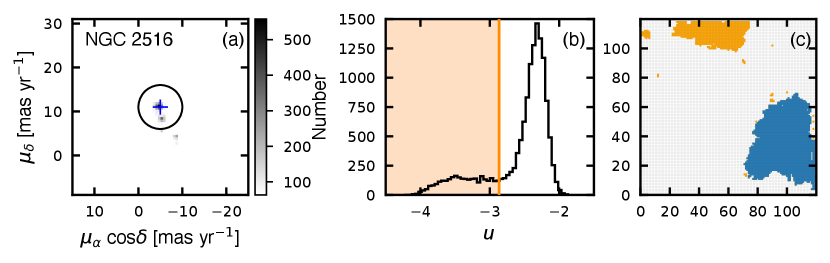
الناتجة عن SOM، الخلايا العصبية ذات تحديد لمعدل التلوث 5% (الخط البرتقالي في اللوحة (ب)) مظللة باللون البرتقالي. ومن بين هذه الخلايا العصبية المقابلة للأعضاء المرشحين للمجموعة المستهدفة NGC 2516 يتم تمييزها باللون الأزرق.
في هذه الدراسة نستخدم معلمات 5D للنجوم في العينة II (R.A.، Decl.، ، ، و) من Gaia EDR 3. نظرًا لأن جزءًا صغيرًا فقط من النجوم في كل مجموعة لديه قياسات RV، فإننا نعتمد السرعات الشعاعية عالية الدقة من Jackson et al. (2020) وBailey et al. (2018) كبيانات تكميلية. تم الحصول على RVs من النجوم في العناقيد العشر المستهدفة من Jackson et al. (2020)؛ هذه جزء من Gaia-ESO Survey (GES, Gilmore et al., 2012) مع عدم اليقين 0.4 km s-1، تم الحصول عليها باستخدام FLAMES (مطياف الألياف ذو المصفوفة المتعددة العناصر) جنبًا إلى جنب مع GIRAFFE وأجهزة قياس الطيف UVES (مطياف الأشعة فوق البنفسجية والمرئية Echelle) المثبتة على تلسكوب 8-m UT2-Kueyen التابع لمنشأة ESO Very Large Telescope. حصلت Bailey et al. (2018) على RVs من النجوم في NGC 2422 مع M2FS (نظام ألياف ميشيغان/ماجلان)، وهو مطياف متعدد الكائنات يتغذى بالألياف على تلسكوب Magellan/Clay 6.5-m، مع متوسط عدم يقين قدره 0.08 km s-1. نحن نستخدم RVs من Gaia DR 2 للمجموعتين Coma Berenice وNGC 6774، ولم يتم تضمين أي منهما في المسوحات الطيفية المذكورة أعلاه.
يتم حساب المسافة إلى كل نجم على حدة بـ ، والتي نحسب منها لكل مصدر الإحداثيات الديكارتية المجرية المركز (). يتم إجراء التحويل باستخدام Python Astropy الحزمة (Astropy Collaboration et al., 2013, 2018). هناك خطأ غير متماثل في المسافة الناشئة عن المباشر انعكاس (Zhang et al., 2020). نحن نعتمد طريقة بايزي لتصحيح المسافات الفردية للنجوم، كما هو موضح في القسم 4.
2.2 تحديد العضوية
طريقة التعلم الآلي غير الخاضعة للرقابة أثبت StarGO (Yuan et al., 2018)11 1 https://github.com/salamander14/StarGO نجاحه في تحديد عضوية OCs، على سبيل المثال، لمجموعة Coma Berenices (Tang et al., 2019)، Blanco 1 (Zhang et al., 2020) وNGC 2232 وLP 2439 (Pang et al., 2020). تعتمد الخوارزمية على خريطة التنظيم الذاتي (SOM) طريقة تقوم بتعيين البيانات عالية الأبعاد على شبكة عصبية ثنائية الأبعاد، مع الحفاظ على الهياكل الطوبولوجية للبيانات.
نحن نطبق StarGO لتعيين مجموعة بيانات 5D (، ) المكونة من عشر مجموعات مستهدفة (Sample II) على شبكة عصبية 2D من أجل تحديد الأعضاء المرشحين. يتم تغذية النجوم إلى الشبكة العصبية بالتتابع. ولذلك نحن الحجم عدد الخلايا العصبية إلى عدد النجوم في العينة II. نحن نعتمد شبكة تحتوي على الخلايا العصبية 100100–150150 (اعتمادًا على عدد النجوم في العينة II لكل مجموعة) ممثلة بعناصر الشبكة 100100 (150150) لدراسة العينة II (يتوفر رسم توضيحي لـ NGC 2516 في الشكل 1 (ج)). يتم تعيين ناقل وزن 5D عشوائي لكل خلية عصبية بنفس أبعاد معلمات 5D (، ) التي يتم توفيرها للخوارزمية. أثناء كل تكرار، يتم تحديث ناقل الوزن لكل خلية عصبية بحيث يكون أقرب إلى ناقل الإدخال الخاص بالنجم المرصود. يتم تكرار عملية التعلم مرات 400 (مرات 600 لشبكات 150150) حتى تتقارب متجهات الوزن. عندما تكون النجوم المرتبطة بالخلايا العصبية متماسكة مكانيًا وحركيًا (على سبيل المثال، عندما تكون أعضاء في الكتلة)، فإن ناقلات الوزن 5D للخلايا العصبية المجاورة تكون متشابهة. ولذلك، فإن قيمة الفرق في ناقلات الوزن بين هذه الخلايا العصبية المجاورة، ، صغيرة. يتم تجميع الخلايا العصبية ذات القيم الصغيرة المماثلة لـ معًا في الشبكة العصبية 2D كبقع (انظر الشكل 1 (ج)). تشكّل مجموعات مختلفة من النجوم بقعًا مختلفة. قيمة أصغر لـ الخلايا العصبية الموجودة داخل الرقعة، وأكبر بالنسبة للخلايا العصبية الموجودة خارج الرقعة. تولد قيم للخلايا العصبية داخل البقع ذيلًا ممتدًا نحو القيم الصغيرة في الرسم البياني (انظر اللوحة (ب) في الشكل 1).
يتم اختيار من خلال تطبيق قطع على ذيل توزيع . تم إجراء هذا القطع لضمان معدل تلوث مماثل لـ 5% بين الأعضاء، والذي تم تطبيقه على NGC 2232 في Pang et al. (2020). نحن نعتمد هذا التلوث النجمي الميداني 5% كمعايير اختيار الأعضاء للمجموعات العشر المستهدفة، والتي تتوافق مع الرقعة الزرقاء في الشكل 1 (ج). نقوم بتقييم معدل التلوث من مجموعة قرص المجرة الملساء باستخدام الفهرس الوهمي Gaia DR 2 (Rybizki et al., 2018). يتم أيضًا تطبيق قطع PM مطابق كما هو موضح في القسم 2.1 على الفهرس الوهمي بنفس حجم السماء. يتم ربط كل من هذه النجوم الوهمية بالشبكة العصبية 2D المدربة. ثم نعتبر النجوم الوهمية المرتبطة بالبقع المختارة بمثابة تلوث. يتم سرد أعداد الأعضاء المحددين في كل مجموعة مستهدفة في الجدول 1. نحن نقدم قائمة أعضاء مفصلة بجميع العناقيد المستهدفة 13 في الجدول 2، مع المعلمات التي تم الحصول عليها في هذه الدراسة. وبالتالي فإن قوائم أعضاء هذه العناقيد المستهدفة 13 تشكّل مجموعات بيانات متجانسة.
3 الخصائص العامة للمجموعات المفتوحة المستهدفة
لتقييم صحة تحديد عضويتنا، قمنا بمطابقة الأعضاء في العناقيد المستهدفة مع فهرسين منشورين بشكل مستقل يحددان مجموعات النجوم باستخدام بيانات Gaia DR 2 للسماء بأكملها: Liu & Pang (2019) وCantat-Gaudin et al. (2020). استخدم Liu & Pang (2019) مكتشف مجموعة صديق الصديق (FoF) لتحديد مجموعات النجوم في Gaia DR 2 في مساحة المعلمة خماسية الأبعاد ( و). يتم تجميع الأعضاء الموجودين في فهرس Cantat-Gaudin et al. (2020) من Cantat-Gaudin & Anders (2020); Castro-Ginard et al. (2018, 2019, 2020) ويتم تحديدهم باستخدام رمز تعيين العضوية غير الخاضع للرقابة UPMASK (Cantat-Gaudin et al., 2018).
جميع العناقيد المستهدفة المقدمة في هذا العمل تتفق بشكل جيد مع كلا الفهرسين، ولها عدد مماثل من الأعضاء المحددين (انظر العمودين الأخيرين في الجدول 1). Coma Berenices، وBlanco 1، وNGC 6774 غير موجودة في فهرس Liu & Pang (2019).
نعرض مواقع جميع الأعضاء المحددين في العناقيد المستهدفة 13 في إحداثيات المجرة في الشكل 2. Coma Berenices (مثلثات رمادية) وBlanco 1 (ألماس رمادي) يحتلان مناطق القطبين الشمالي والجنوبي للمجرة، على التوالي. تقع OCs الأخرى ضمن درجات 15 من مستوى المجرة. على الرغم من أن NGC 2451A وNGC 2451B يبدوان متداخلين في إسقاط 2D، إلا أنه يتم فصلهما بمسافة pc على طول خط البصر (انظر الجدول 1). ويمكن رؤية ذيول مدية الممتدة بوضوح في Coma Berenices وBlanco 1. ولوحظ شكل ممدود في العناقيد الأخرى، ولا سيما في NGC 2547، NGC 2516، NGC 2232 وNGC 2451B. لاحظ أن شكل 2D المسقط المطول الذي نراه في الإسقاط، يجب أن يكون له استطالة أكثر وضوحًا في شكل 3D. سنجري تحقيقًا تفصيليًا في مورفولوجيا 3D للمجموعات في عينتنا في القسم 4.
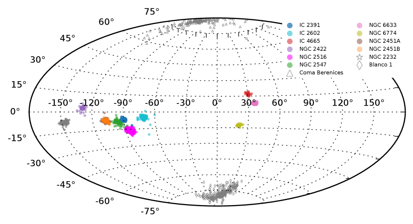
نعرض أعضاء كل مجموعة في مخطط حجم اللون (CMD؛ الشكل 3). تتبع النجوم الأعضاء في كل مجموعة موضعًا واضحًا للتسلسل الرئيسي، وهو ما يتوافق مع PARSEC (المنحنيات الصلبة السوداء في الشكل 3) والتي يتم توفير منحنيات الحساسية لها بواسطة Maíz Apellániz & Weiler (2018). يوضح توزيع النجوم في CMD أن التسلسل الرئيسي لنجوم المجال (والذي هو أكثر زرقة من العناقيد) قد تم ترشيحه إلى حد كبير، مما يؤكد بشكل أكبر موثوقية الأعضاء الذين تم تحديدهم في كل مجموعة. نحن نعتمد الأعمار للمجموعات المستهدفة من الدراسات السابقة (باستثناء NGC 2451B) عندما تكون في اتفاق جيد مع مواقع الأعضاء في CMD. نحن نلائم قيم والمعدنية غير المتوفرة في الأدبيات. نقوم بإدراج أعمار المجموعة والمعلمات ذات الصلة في الجدول 1. تمتد أعمار العناقيد على نطاق واسع، من 25 Myr لأصغر مجموعة (NGC 2232) إلى 2.65 Gyr لأقدم مجموعة (NGC 6774). تتيح لنا هذه الفئة العمرية الواسعة في عينة العناقيد المستهدفة استكشاف تأثير التطور الديناميكي العلماني للمجموعات النجمية والتفاعل مع بيئاتها على شكلها. غالبية العناقيد في العينة صغيرة نسبيًا، وأعمارها أصغر من 100 Myr. أربع مجموعات متوسطة العمر، تتراوح أعمارها بين 100 Myr و800 Myr.
تمت ملاحظة إيقاف تشغيل تسلسل رئيسي ممتد (eMSTO) لـ 0.3 mag باللون في مجموعتين متوسطتي العمر، NGC 2516 (123 Myr) وNGC 6633 (426 Myr). تمت ملاحظة منطقة eMSTO في العديد من العناقيد النجمية الأخرى (Li et al., 2014, 2017; Milone et al., 2018; Li et al., 2019)، وهي نتيجة للنجوم ذات معدلات دوران واسعة التوزيع (Bastian & de Mink, 2009; D’Antona et al., 2017). وفي الوقت نفسه، يمكن رؤية موضع التسلسل الثنائي للأنظمة ذات الكتلة المتساوية بوضوح بالنسبة لمعظم العناقيد. في المجموعة الأقدم NGC 6774، نلاحظ مرشحين متناثرين باللون الأزرق.
تم العثور على ستة عشر عضوًا من القزم الأبيض في خمس من العناقيد المستهدفة (IC 2391، Blanco 1، NGC 2516، Coma Berenices، وNGC 6774). تم فهرسة غالبية هذه العناصر في Gentile Fusillo et al. (2019). تتجمع الأقزام البيضاء في NGC 2516 وNGC 6774 في مواقع مشابهة جدًا في CMD. تم إجراء دراسة تفصيلية لثلاثة من الأقزام البيضاء في NGC 2516 بواسطة Koester & Reimers (1996, المعرّفات: NGC 2516-1,2,5). تم تقدير عمر هذه الأقزام البيضاء بـ 120–160 Myr (استنادًا إلى عمر التبريد، وعمر التسلسل الرئيسي، وعمر العمالقة الحمراء)، وهو ما يتوافق مع عمر العنقود المحدد في دراستنا.
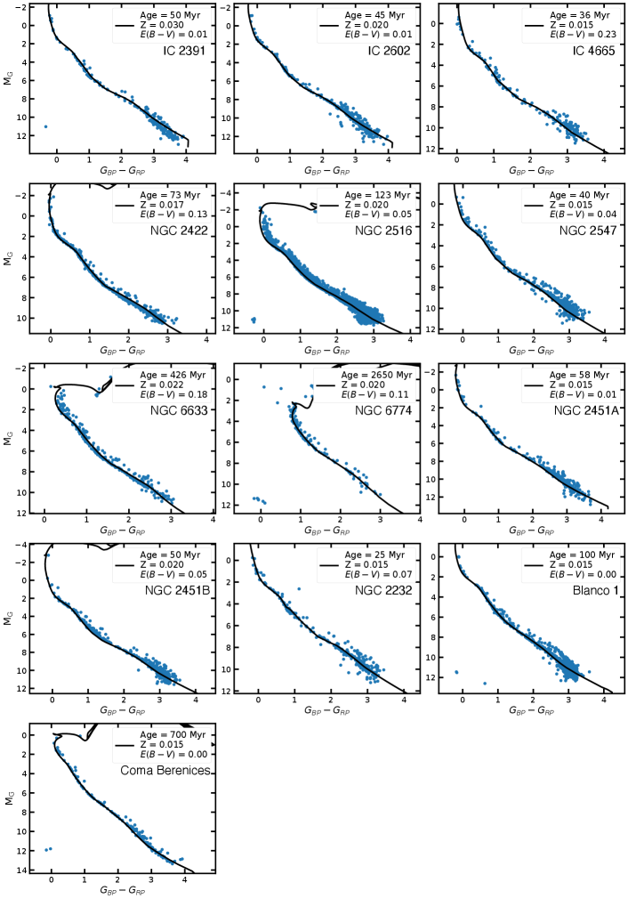
| Cluster | Age | memb. | CG20 | LP19 | |||||||||
|---|---|---|---|---|---|---|---|---|---|---|---|---|---|
| (Myr) | (pc) | (M☉) | (dex) | (mag) | (number) | ||||||||
| (1) | (2) | (3) | (4) | (5) | (6) | (7) | (8) | (9) | (10) | (11) | (12) | (13) | |
| IC 2391 | 50a,C | 151.5 | 0.8 | 2.5 | 7.6 | 140.2 | 315.8 | 0.030W | 0.01b,C | 219 | 190 (86%) | 135 (94%) | |
| IC 2602 | 45a,C | 151.9 | 0.7 | 3.7 | 8.4 | 188.1 | 464.8 | 0.020W | 0.01W | 318 | 267 (86%) | 135 (94%) | |
| IC 4665 | 36c,C | 347.3 | 2.8 | 6.0 | 7.9 | 158.5 | 530.5 | 0.015W | 0.23W | 197 | 142 (85%) | 74 (91%) | |
| NGC 2422 | 73d,C | 476.5 | 3.2 | 4.9 | 11.4 | 480.2 | 1112.4 | 0.017d,C | 0.13W | 466 | 312 (75%) | 335 (68%) | |
| NGC 2516 | 123e,C | 410.5 | 3.1 | 7.9 | 18.3 | 1973.3 | 3368.2 | 0.020e,C | 0.05e,C | 2690 | 640 (98%) | 1365 (96%) | |
| NGC 2547 | 40e,C | 387.4 | 2.7 | 5.6 | 9.8 | 303.9 | 1032.2 | 0.015e,C | 0.04e,C | 452 | 192 (89%) | 214 (88%) | |
| NGC 6633 | 426f,C | 394.3 | 2.4 | 5.3 | 10.2 | 337.3 | 1698.2 | 0.022W | 0.18W | 300 | 133 (89%) | 164 (88%) | |
| NGC 6774 | 2650g,C | 306.5 | 2.0 | 4.7 | 7.8 | 152.6 | 1039.0 | 0.020g,C | 0.11g,C | 154 | 136 (80%) | ||
| NGC 2451A | 58h,C | 192.6 | 1.3 | 4.9 | 8.3 | 182.2 | 738.5 | 0.015W | 0.01h,C | 311 | 266 (80%) | 204 (93%) | |
| NGC 2451B | 50W | 362.9 | 2.6 | 6.0 | 9.1 | 242.1 | 566.7 | 0.020W | 0.05h,C | 359 | 207 (73%) | 109 (85%) | |
| NGC 2232 | 25i,C | 319.1 | 2.3 | 6.8 | 8.6 | 205.8 | 263.7 | 0.015i,C | 0.07i,C | 281 | 169 (90%) | 93 (89%) | |
| Blanco 1 | 100j,C | 236.7 | 2.1 | 6.7 | 10.2 | 342.9 | 605.0 | 0.015j,C | 0.0j,C | 703 | 369 (97%) | ||
| Coma Berenices | 700k,C | 86.4 | 0.3 | 4.7 | 6.8 | 101.6 | 574.0 | 0.015k,C | 0.0k,C | 158 | 129 (84%) | ||
Note. — هو متوسط المسافة المصححة للأعضاء في كل مجموعة. هو الخطأ في المسافة المصححة باتباع النموذج الافتراضي الموضح في القسم 4.1. و هما نصف قطر الكتلة والمد والجزر لكل مجموعة. المعدنية، ، والاحمرار، ، للعديد من العناقيد مأخوذة من الأدبيات (يشار إليها بحرف كبير )، وقد تم تجهيز بعضها في هذا العمل بحرف كبير . عندما يناسب العمر المشار إليه الأعضاء، نعتمد العمر من الأعمال السابقة (يشار إليه بحرف كبير ). الكمية هي كتلة كل عنقود نجمي. يعرض العمودان الأخيران عدد الأعضاء المتطابقين في Cantat-Gaudin et al. (2018) (CG18) وLiu & Pang (2019) (LP19)، والنسب المئوية المقابلة. تم اعتماد العمر و لبعض العناقيد من أ:Marsden et al. (2009)؛ ب: Postnikova et al. (2020)؛ ج: Miret-Roig et al. (2019)، د: Bailey et al. (2018)، البريد الإلكتروني: Gaia Collaboration et al. (2018a)، f: Williams & Bolte (2007)، ز: Olivares et al. (2019)، ح: Balog et al. (2009)، ط:Pang et al. (2020)، ي: Zhang et al. (2020)، ك: Tang et al. (2019).
4 3D مورفولوجيا العناقيد المفتوحة
4.1 المسافات من خلال انعكاس المنظر البايزي
من المعروف أن شكل العناقيد النجمية يبدو ممتدًا على طول خط البصر، عندما يتم الحصول على المسافات عن طريق انعكاس المنظر البسيط (انظر مثلا، Carrera et al., 2019). مثل هذا الاستطالة الاصطناعية هو نتيجة لحساب المسافة إلى كل نجم عن طريق عكس المنظر Gaia EDR 3 أو DR 2 مباشرة، . حتى عندما يكون للأخطاء في قياسات اختلاف المنظر توزيع متماثل، فإن أخذ المعكوس يقدم توزيعًا منحرفًا للأخطاء على المسافات، مما يؤدي إلى انحياز منهجي في المسافة إلى كل مجموعة. نقوم بإجراء عمليات محاكاة مونت كارلو لتقدير مساهمة خطأ اختلاف المنظر في حالة عدم اليقين في المسافة العنقودية (انظر أيضا Zhang et al., 2020). تم اعتماد القيمة المتوسطة لـ لكل مجموعة لتقدير عدم اليقين الناجم عن اختلاف المنظر في المسافة، والذي عادةً ما يكون 0.4–12.6 pc للمجموعات في عينتنا.
للتخفيف من هذه المشكلة، نتبع الطريقة التي قدمتها Bailer-Jones (2015) ونعالج مشكلة الانعكاس ضمن إطار عمل بايزي. يتبع نهجنا عن كثب إجراء تصحيح المسافة الموضح في Carrera et al. (2019). في هذا النهج يفترض التوزيع المسبق لكل نجم. تم اعتماد نظرية بايزي لتقدير السابقة من خلال دالة الاحتمالية المحسوبة من اختلاف المنظر المرصود وخطأه الاسمي. يتكون الجزء السابق من مكونين، أحدهما يمثل كثافة العنقود النجمي والآخر يمثل المجال. الأول يتبع التوزيع الطبيعي، والأخير هو كثافة متناقصة بشكل كبير كما في Bailer-Jones (2015). يتزامن الانحراف المعياري لمكون الكتلة مع الانحراف المعياري للمسافة المركزية للعنقود من النجوم الأعضاء (أي مسافات النجوم من مركز كل عنقود نجمي). نحن نجمع بين هذين العنصرين بأوزان تتناسب مع احتمالية العضوية. نحن نطبق قيمة 95% لمصطلح الكتلة، و5% لمصطلح نجم الحقل (انظر القسم 2.2). ويعتبر متوسط المسافة الخلفية هو المسافة المصححة لكل نجم. يمكن العثور على مزيد من التفاصيل حول أسلوب انعكاس المنظر هذا في Carrera et al. (2019) وفي Pang et al. (2020).
علاوة على ذلك، نقوم بتنفيذ عمليات محاكاة مونت كارلو لتقدير عدم اليقين في المسافات المصححة الناتجة عن إجراءاتنا. تمت محاكاة ثلاثة أنواع من العناقيد لاختبار الإجراء البايزي لدينا: (1) عناقيد نجمية كروية ذات توزيع مكاني موحد للنجوم؛ (2) مجموعات النجوم الممدودة ذات الاستطالة المتعامدة مع خط البصر؛ و(3) العناقيد النجمية الطويلة ذات الاستطالة على طول خط البصر. بالنسبة للنموذج الموحد، فإن عدم اليقين في المسافة المصححة لدينا يزداد بشكل رتيب مع المسافة (منحنى أسود صلب في الشكل 4). على مسافة 500 pc، يصبح الخطأ في متوسط المسافة المصححة لجميع النجوم كبيرًا مثل 3.0 pc. عندما يكون استطالة الكتلة عموديًا على خط البصر، تكون الأخطاء مشابهة جدًا لتلك الموجودة في كتلة موحدة، وتصل إلى خطأ أكبر قليلاً وهو 3.4 pc على مسافة 500 pc (منحنى أسود منقط في الشكل 4). ويختلف الوضع بالنسبة للنموذج الذي يكون فيه الاستطالة على طول خط البصر؛ في هذه الحالة، يكون عدم اليقين كبيرًا مثل 6.3 pc على مسافة 500 pc (منحنى أسود متقطع في الشكل 4). تم وصف تفاصيل إجراء عمليات المحاكاة في الملحق C.
توضح هذه النتائج أن جودة اختلاف المنظر Gaia تلعب دورًا مهمًا في تحديد مورفولوجيا الكتلة الجوهرية المستردة من القياسات. الاستطالة المورفولوجية الاصطناعية بسبب أخطاء اختلاف المنظر تصبح أكثر خطورة عندما يحدث الاستطالة الجوهرية لمحاذاة خط البصر. ستعاني التجمعات المتطاولة بشكل جوهري من قدر أكبر من عدم اليقين في المسافة المصححة، خاصة عندما يكون استطالتها محاذية لخط البصر.
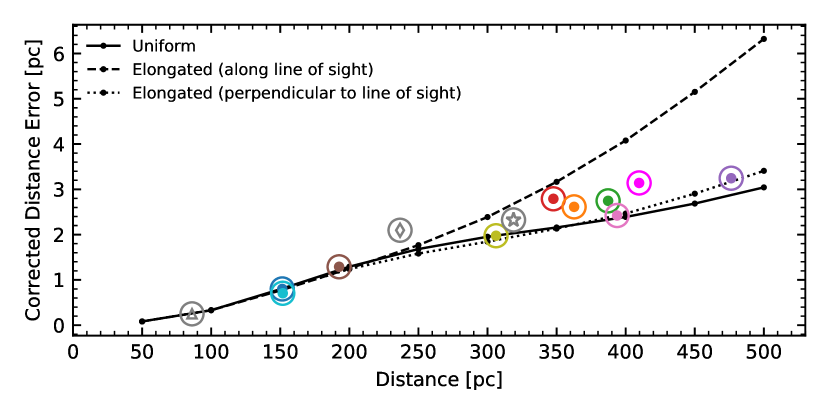
4.2 عرض مورفولوجية 3D
في الأشكال 5 و6 و7 نعرض التوزيعات المكانية 3D بعد تصحيح المسافات للنجوم الأعضاء في العناقيد المستهدفة 13. يتم عرض مواضع 3D المصححة للأعضاء في جميع العناقيد المستهدفة 13 في الجدول 2، مع معلمات أخرى من Gaia EDR 3. نقدم أيضًا مواضع 3D للمجموعات المستهدفة 13 في الجدول 3. قدمت الطريقة البايزية تصحيحًا معقولًا للأشكال الممتدة على طول خط البصر لكل مجموعة (النقاط الرمادية في الأشكال 5 و6 و7).
ولتقدير عدم اليقين في المسافة المصححة لكل مجموعة، نقوم بإجراء عمليات محاكاة إضافية لكل مجموعة مستهدفة على حدة، باستخدام نموذج موحد (لمزيد من التفاصيل، انظر الملحق C). نطبق خطأ اختلاف المنظر المتوسط على أعضاء كل مجموعة وننقل المجموعة المحاكية إلى نفس المسافة مثل كل مجموعة مستهدفة. يتم تمثيل عدم اليقين المقابل في تصحيح المسافة لكل مجموعة (الجدول 1) برمز ملون في الشكل 4، الذي يتبع منحنى النموذج الموحد. أبعد عنقود نجمي، NGC 2422 (476 pc)، لديه درجة عدم يقين تبلغ 3.2 pc في المسافة المصححة. إن عدم اليقين في المسافة التي تم الحصول عليها من خلال تصحيح المسافة البايزية أصغر بكثير من الخطأ الذي ينشأ من الانعكاس المباشر Gaia اختلاف المنظر (انظر القسم 4.1).
لتحديد حجم كل عنقود نجمي، نقوم بحساب نصف القطر المدي الخاص بها
| (1) |
(Pinfield et al., 1998). هنا، هو ثابت الجاذبية، و هي الكتلة الإجمالية للعنقود النجمي (أي مجموع كتل النجوم الفردية الأعضاء)، والمعلمات و هي ثوابت أورت ( و ؛ انظر Bovy, 2017).
في التحليل أدناه، نفترض أن الأعضاء المرشحين الموجودين داخل نصف القطر المدي مرتبطون بقوة الجاذبية بالعنقود النجمي، في حين أن الأعضاء الخارجيين غير مرتبطين. يتم الحصول على كتلة كل نجم عضو على حدة من أقرب نقطة في الأيزوكرون المجهز الذي يتم البحث عنه باستخدام طريقة الشجرة -D (Millman et al., 2011). تتم الإشارة إلى نصف القطر المدي لكل مجموعة بدائرة سوداء في كل لوحة من الأشكال 5 و 6 و 7.
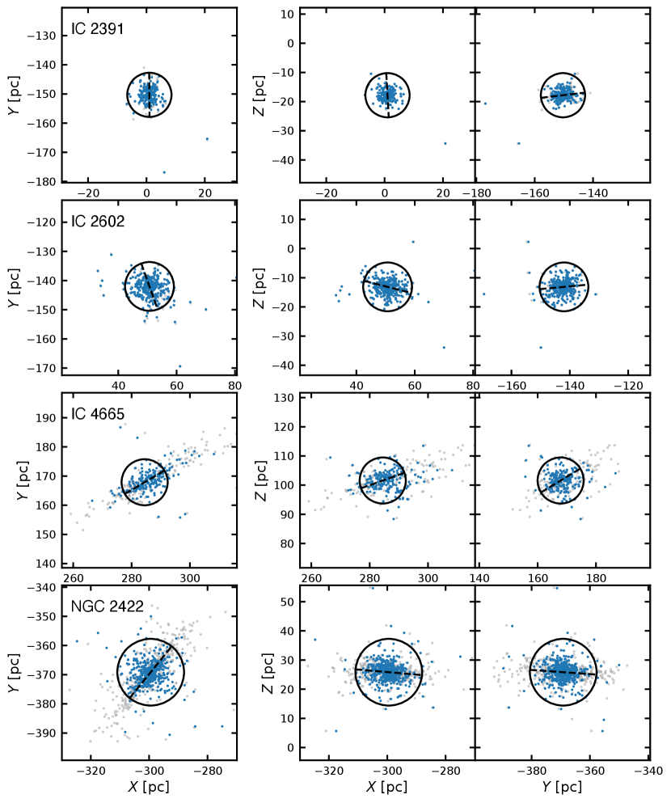
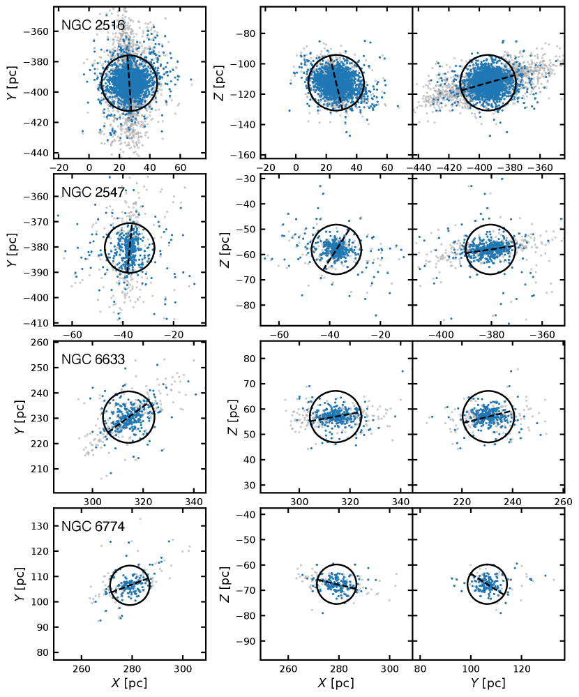
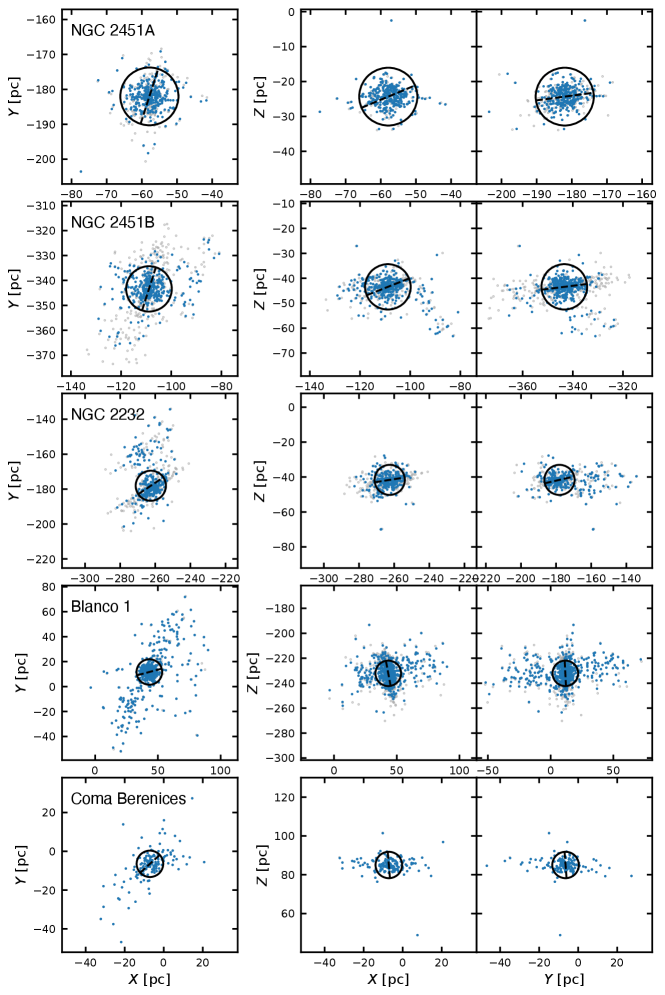
| Column | Unit | Description |
|---|---|---|
| Cluster Name | Name of the target cluster | |
| Gaia ID | Object ID in Gaia EDR 3 | |
| ra | degree | R.A. at J2016.0 from Gaia EDR 3 |
| er_RA | mas | Positional uncertainty in R.A. at J2016.0 from Gaia EDR 3 |
| dec | degree | Decl. at J2016.0 from Gaia EDR 3 |
| er_DEC | mas | Positional uncertainty in decl. at J2016.0 from Gaia EDR 3 |
| parallax | mas | Parallax from Gaia EDR 3 |
| er_parallax | mas | Uncertainty in the parallax |
| pmra | mas yr-1 | Proper motion with robust fit in from Gaia EDR 3 |
| er_pmra | mas yr-1 | Error of the proper motion with robust fit in |
| pmdec | mas yr-1 | Proper motion with robust fit in from Gaia EDR 3 |
| er_pmdec | mas yr-1 | Error of the proper motion with robust fit in |
| Gmag | mag | Magnitude in band from Gaia EDR 3 |
| BR | mag | Magnitude in band from Gaia EDR 3 |
| RP | mag | Magnitude in band from Gaia EDR 3 |
| Gaia_radial_velocity | km s-1 | Radial velocity from Gaia DR 2 |
| er_Gaia_radial_velocity | km s-1 | Error of radial velocity from Gaia EDR 3 |
| Jackson_radial_velocity | km s-1 | Radial velocity from Gaia/ESO survey (Jackson et al., 2020) |
| er_Jackson_radial_velocity | km s-1 | Error of radial velocity from Gaia/ESO survey (Jackson et al., 2020) |
| Bailey_radial_velocity | km s-1 | Radial velocity from Bailey et al. (2018) |
| er_Bailey_radial_velocity | km s-1 | Error of radial velocity from Bailey et al. (2018) |
| Mass | M⊙ | Stellar mass obtained in this study |
| X_obs | pc | Heliocentric Cartesian X coordinate computed via direct inverting Gaia EDR 3 parallax |
| Y_obs | pc | Heliocentric Cartesian Y coordinate computed via direct inverting Gaia EDR 3 parallax |
| Z_obs | pc | Heliocentric Cartesian Z coordinate computed via direct inverting Gaia EDR 3 parallax |
| X_cor | pc | Heliocentric Cartesian X coordinate after distance correction in this study |
| Y_cor | pc | Heliocentric Cartesian Y coordinate after distance correction in this study |
| Z_cor | pc | Heliocentric Cartesian Z coordinate after distance correction in this study |
| Dist_cor | pc | The corrected distance of individual member |
Note. — تتوفر نسخة كاملة قابلة للقراءة آليًا من هذا الجدول عبر الإنترنت.
| Cluster | |||||||
|---|---|---|---|---|---|---|---|
| (pc) | (km s-1) | ||||||
| (1) | (2) | (3) | (4) | (5) | (6) | (7) | |
| IC 2391 | 1.22 | -150.35 | -17.92 | -23.88 | -15.56 | -5.75 | |
| IC 2602 | 50.61 | -141.97 | -12.98 | -7.92 | -22.16 | -0.73 | |
| IC 4665 | 283.76 | 167.91 | 101.81 | -3.58 | -17.41 | -8.85 | |
| NGC 2422 | -299.34 | -369.47 | 26.22 | -30.66 | -22.29 | -10.86 | |
| NGC 2516 | 26.65 | -394.41 | -112.85 | -21.99 | -25.02 | -4.51 | |
| NGC 2547 | -37.06 | -381.18 | -57.98 | -16.15 | -9.99 | -10.95 | |
| NGC 6633 | 315.25 | 228.84 | 56.99 | -20.64 | -17.66 | -7.60 | |
| NGC 6774 | 278.57 | 106.22 | -67.20 | 49.05 | -19.42 | -24.30 | |
| NGC 2451A | -58.09 | -182.22 | -23.22 | -27.16 | -14.30 | -12.78 | |
| NGC 2451B | -109.29 | -343.86 | -43.58 | -18.75 | -8.28 | -12.11 | |
| NGC 2232 | -261.38 | -179.95 | -41.41 | -20.44 | -13.08 | -10.86 | |
| Blanco 1 | 42.91 | 11.44 | -233.01 | -18.55 | -6.62 | -9.80 | |
| Coma Berenices | -7.25 | -6.07 | 85.27 | -2.47 | -5.63 | -0.33 | |
Note. — , , هو موضع 3D للمجموعات المستهدفة 13 في الإحداثيات الديكارتية ذات مركز الشمس، والتي يتم اعتبارها القيمة المتوسطة لجميع الأعضاء. ، ، هي سرعات 3D المتوسطة لكل مجموعة في الإحداثيات الديكارتية متمركزة حول الشمس.
يمكن عموما وصف المورفولوجيا العامة للعنقود المفتوح بنواة مركزية كثيفة (أو لب) وهالة خارجية (أو إكليل). والهالة أكثر امتدادا بكثير وذات كثافة عددية نجمية منخفضة (Nilakshi et al., 2002). ومع ذلك، قد يكون عدد الأعضاء في الهالة كبيرا (Meingast et al., 2020). ويظهر كل من Blanco 1 وComa Berenices ذيلين مديين عظيمين يمتدان حتى 50–60 pc من مركز العنقود، وينتميان إلى منطقة الهالة ويمثلان أكثر من 36% و50% من أعضائهما، على التوالي. وقد وجد أن اتجاه الذيول المدية في Coma Berenices وBlanco 1 مواز للمستوى المجرّي، بما يتفق مع الدراسات السابقة (Bergond et al., 2001; Chen et al., 2004). ولا تظهر استطالة واضحة في العنقودين الفتيين IC 2391 وIC 2602. ويبدو IC 2391 أكثر تراصا مركزيا مع لب واضح، في حين أن IC 2602 أكثر غنى بالأعضاء. وعلى الرغم من عمره البالغ 36 Myr، يمتلك IC 4665 توزيعا مخلخلا من دون تركّز مركزي واضح، وقد يكون ذلك نتيجة لطرد الغاز السريع (Pang et al., 2020; Dinnbier & Kroupa, 2020a, انظر مزيدا من النقاش في القسم 5.2). وتظهر استطالة على طول خط البصر في المنطقة التي تضم النجوم المرتبطة جاذبيا بالعنقود (أي داخل نصف القطر المدي) في NGC 2422 وNGC 2547 وNGC 6633 وBlanco 1 (وترد الزاوية بين الاستطالة وخط البصر، ، في الجدول 4). إن أخطاء المسافات المصححة لهذه العناقيد ( 2.1–3.2 pc) أصغر بكثير من امتداد مناطقها الممدودة (20–30 pc). لذلك فإن كشف الاستطالات متين. وتتداخل ستة عناقيد، IC 2391 وIC 2602 وNGC 2457 وNGC 2451A وNGC 2516 وBlanco 1، مع عمل سابق لـ Meingast et al. (2020) يستند إلى Gaia DR 2. ويتطابق نحو 60–90% من أعضائنا مع الأعضاء الذين حددهم Meingast et al. (2020). وتقع غالبية الأعضاء المتطابقين داخل نصف القطر المدي للعنقود. أما طريقة تحديد العضوية الحالية لدينا فلا تستطيع تأكيد عضوية النجوم في الإكليل النجمي الواسع الممتد الذي حدده Meingast et al. (2020).
نتيجة للدقة الأعلى في قياسات الحركة الخاصة في Gaia EDR 3، أُعيد الآن تحديد الهياكل الخيطية الممتدة حول NGC 2232، التي كانت قد حُددت سابقا كمجموعتين منفصلتين (الأرجوانية والخضراء) في Pang et al. (2020) (باستخدام بيانات Gaia DR 2 وبنفس تقنية الاختيار)، على أنها أعضاء في NGC 2232. وهذا يؤكد استنتاج Pang et al. (2020) بأن الهياكل الخيطية المتساوية العمر ترتبط ارتباطا وثيقا بـ NGC 2232، إذ تشكّلت في الوقت نفسه في السحب الجزيئية الأبوية (Jerabkova et al., 2019; Beccari et al., 2020; Tian, 2020). كما عُثر على بنى فرعية مشابهة للخيوط في عنقودين فتيين آخرين، هما NGC 2547 وNGC 2451B. ومن ناحية أخرى، كُشفت بنى تشبه الذيول المدية وتمتد حتى 10–20 pc في ثلاثة عناقيد أقدم: NGC 2516، وNGC 6633، وNGC 6774. يشير التوزيع المكاني المنتشر لأقدم مجموعة (NGC 6774) إلى حالة الذوبان المتقدمة، بعد أن شهدت تطورًا ديناميكيًا علمانيًا كبيرًا. تؤكد مورفولوجيا 3D لـ OCs مرة أخرى وجود استطالة 2D التي لاحظناها في NGC 2547 وNGC 2516 وNGC 2232 وNGC 2451B في الشكل 2.
4.3 معلمات أشكال 3D
من توزيع 3D للنجوم الأعضاء في كل مجموعة (الأشكال 5، 6، و7)، يمكن تقريب الشكل العام لتوزيع الأعضاء داخل نصف القطر المدي باستخدام شكل إهليلجي. نقوم بإجراء تركيب إهليلجي 22 2 https://github.com/marksemple/pyEllipsoid_Fit على مورفولوجيا 3D لكل مجموعة من أجل تحديد شكل توزيع النجوم المقيدة في العناقيد المستهدفة (لا ندرج الأعضاء الموجودين خارج نصف القطر المدي، نظرًا لأن عددهم صغير). يظهر NGC 2516 كمثال لتوضيح التركيب الإهليلجي للنجوم الأعضاء المرتبطة (انظر الشكل 8). يتمركز الشكل الإهليلجي المجهز (السطح الأخضر) في الموضع المتوسط للأعضاء المرتبطة، والذي نعتبره مركز الكتلة. تعد أنصاف المحاور الثلاثة للإهليلجي ، و، و هي المعلمات الحرة في هذا التوافق، حيث هو نصف المحور الأكبر (الخط الأحمر)، و هو نصف المحور المتوسط (الخط الوردي)، و المحور شبه الأصغر (الخط البرتقالي). نستخدم أطوال أنصاف المحاور ، ، ، ونسب المحاور و لوصف مورفولوجية العناقيد، واتجاه نصف المحور الأكبر للمحور تم تركيب الشكل الإهليلجي كإتجاه استطالة الكتلة النجمية. تشير القيم الأصغر لنسب المحور و إلى بنية أكثر استطالة. يتم سرد القيم المجهزة للمعلمات المورفولوجية (، ، ، و) في الجدول 4. نحسب أيضًا لكل مجموعة الزاوية بين اتجاه والمستوى المجرّي (إسقاط على المستوى المجرّي)، والزاوية بين اتجاه وخط البصر. يتم سرد قيم هاتين الزاويتين في الجدول 4. يتم عرض الأشكال الناقصية المجهزة للنجوم داخل نصف القطر المدي للاثني عشر هدفًا آخر OCs في الملحق D (الشكل 17).
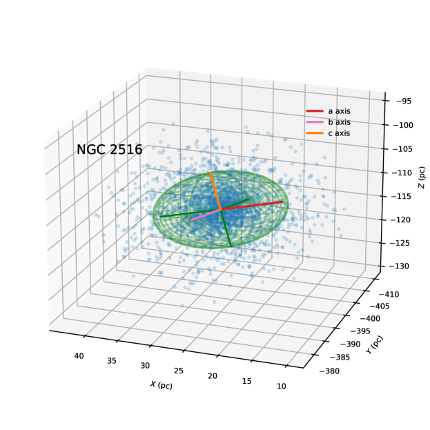
| Cluster Name | |||||||||||||
|---|---|---|---|---|---|---|---|---|---|---|---|---|---|
| (pc) | (axis ratio) | (degrees) | (km s-1) | ||||||||||
| (1) | (2) | (3) | (4) | (5) | (6) | (7) | (8) | (9) | (10) | (11) | |||
| IC 2391 | 5.43±0.16 | 3.49±0.06 | 2.21±0.05 | 0.64±0.02 | 0.41±0.02 | 16.76 | 46.94 | 0.34^+0.22_-0.20 | 0.50^+0.07_-0.06 | 0.43±0.06 | |||
| IC 2602 | 5.48±0.11 | 4.37±0.04 | 3.66±0.05 | 0.80±0.02 | 0.67±0.02 | 5.44 | 41.35 | 0.20^+0.15_-0.13 | 0.50^+0.07_-0.06 | 0.50^+0.07_-0.06 | |||
| IC 4665 | 6.13±3.03 | 4.49±0.40 | 3.72±0.48 | 0.73±0.37 | 0.61±0.31 | 38.78 | 22.50 | 0.38±0.16 | 0.40^+0.07_-0.05 | 0.28±0.05 | |||
| NGC 2422 | 6.30±4.04 | 5.54±0.49 | 4.57±0.56 | 0.88±0.57 | 0.73±0.47 | 19.01 | 79.28 | 0.71^+0.18_-0.15 | 0.47^+0.07_-0.05 | 0.50±0.07 | |||
| NGC 2516 | 10.03±3.75 | 9.32±0.48 | 6.98±0.53 | 0.93±0.35 | 0.70±0.27 | 11.93 | 31.29 | 0.72±0.07 | 0.82±0.04 | 0.80±0.04 | |||
| NGC 2547 | 7.42±2.78 | 6.14±0.39 | 2.88±0.44 | 0.83±0.31 | 0.39±0.16 | 4.20 | 10.81 | 0.68^+0.09_-0.08 | 0.39±0.04 | 0.42±0.04 | |||
| NGC 6633 | 8.20±2.21 | 5.60±0.31 | 3.34±0.38 | 0.68±0.19 | 0.41±0.12 | 1.22 | 23.90 | 0.76^+0.32_-0.22 | 0.47^+0.09_-0.07 | 0.77±0.19 | |||
| NGC 6774 | 6.31±1.45 | 4.37±0.22 | 2.98±0.27 | 0.69±0.16 | 0.47±0.12 | 18.30 | 17.53 | 0.55^+0.17_-0.15 | 0.39±0.04 | 0.71^+0.09_-0.07 | |||
| NGC 2451A | 5.43±0.56 | 4.98±0.11 | 3.52±0.12 | 0.92±0.10 | 0.65±0.07 | 14.33 | 81.06 | 0.23^+0.35_-0.17 | 0.68^+0.10_-0.08 | 0.37^+0.06_-0.05 | |||
| NGC 2451B | 5.96±2.62 | 5.69±0.37 | 4.14±0.42 | 0.95±0.42 | 0.69±0.31 | 22.12 | 48.56 | 0.25^+0.20_-0.16 | 0.48^+0.07_-0.05 | 0.34^+0.05_-0.03 | |||
| NGC 2232 | 6.11±2.01 | 5.12±0.28 | 3.37±0.36 | 0.84±0.28 | 0.55±0.19 | 4.55 | 26.05 | 0.10^+0.11_-0.07 | 0.27^+0.05_-0.03 | 0.29^+0.05_-0.03 | |||
| Blanco 1 | 8.28±1.66 | 4.65±0.25 | 4.01±0.31 | 0.56±0.12 | 0.48±0.10 | 78.35 | 12.53 | 0.32±0.08 | 0.40±0.03 | 0.36±0.03 | |||
| Coma Berenices | 4.91±0.02 | 4.23±0.02 | 3.43±0.01 | 0.86±0.01 | 0.70±0.01 | 14.3 | 79.38 | 0.61±0.18 | 0.22^+0.04_-0.03 | 0.32^+0.05_-0.04 | |||
Note. — ، ، هي المحاور شبه الرئيسية وشبه المتوسطة وشبه الثانوية للمجسم الإهليلجي المجهز لكل مجموعة نجوم في العينة. هي الزاوية بين اتجاه والمستوى المجرّي. الكمية هي الزاوية بين اتجاه وخط البصر. هو تشتت RV (داخل نصف القطر المدي)؛ و هما تشتت R.A. وDecl. مكونات PMs (داخل نصف القطر المدي). يتم الحصول على القيم الموجودة في الأعمدة 9–11 باستخدام طريقة MCMC؛ كل قيمة ملائمة هي متوسط التوزيع الخلفي، وحالات عدم اليقين هي النسب المئوية المقابلة 16 و84 للتوزيع الخلفي.
تحتوي العناقيد NGC 2516 وNGC 2547 وNGC 2451A وNGC 2451B وNGC 2232 على نسب محاور تبلغ تقريبًا ، بينما . تشبه مورفولوجيات هذه العناقيد الخمس أشباه الكرات المفلطحة. العناقيد الأخرى، IC 2602، وIC 4665، وNGC 2422، لها أشكال موصوفة جيدًا بواسطة أشباه الكرات المتطاولة، مع وجود فرق بين و أقل من 10%. بعد استبعاد الذيول البارزة خارج نصف القطر المدي لـ Coma Berenices وBlanco 1، فإن التوزيعات الكروية المتطايرة تناسب كلا المجموعتين. يمكن تقريب أشكال العناقيد المتبقية (IC 2391 وNGC 6633 وNGC 6774) على أنها إهليلجية ثلاثية المحاور.
من المحتمل أن يكون الشكل غير الكروي للمنطقة المرتبطة لمعظم العناقيد المستهدفة نتيجة للتفاعل بين العمليات الديناميكية الداخلية والخارجية. تتبخر النجوم المسترخية تدريجيًا، وبشكل أساسي من خلال نقاط لاغرانج (Küpper et al., 2008)، وهي عملية تعتمد على حركة كل عنقود من خلال قرص المجرة. بالإضافة إلى ذلك، يمارس المجال المدي الخارجي قوة تسحب العنقود بعيدًا على طول المحور الذي يربط العنقود بمركز المجرة. بسبب الدوران التفاضلي، تميل ذيول مدية المستحثة دائمًا بالنسبة إلى مدار الكتلة (Tang et al., 2019). وهذا هو السبب وراء كون ذيول مدية Coma Berenices وBlanco 1 موازية للمستوى المجري (انظر الشكل 7). المنطقة المرتبطة (داخل نصف القطر المدي) لمعظم العناقيد لها اتجاه استطالة يتماشى بشكل أو بآخر مع المستوى المجرّي (انظر الشكل 17)، بزاوية (بين والقرص) قدرها (انظر الجدول 4). وبالتالي فإن هذه النتيجة تتفق مع النتائج السابقة (Oort, 1979; Bergond et al., 2001; Chen et al., 2004)، وتشير أيضًا إلى أنه على الرغم من صغر سنها، فقد تأثرت معظم العناقيد المجرية بالفعل بالمد والجزر الخارجي. لا يتوافق اتجاه نصف المحور الأكبر مع اتجاه خط البصر (انظر قيم في الجدول 4)، مما يؤكد موثوقية تصحيح المسافة لدينا (القسم 4.1).
على الرغم من أن Blanco 1 يبدو أنه يُظهر دليلاً على تأثره بالقوة المدية، إلا أن المنطقة المرتبطة به لها استطالة تتماشى بشكل وثيق مع الاتجاه العمودي () المتعامد مع مستوى المجرة (بزاوية ). بينما تهرب النجوم بشكل رئيسي من خلال نقطتي لاغرانج، فإن عملية التبخر تمتد على طول الطريق بين نقطتي لاغرانج (Küpper et al., 2008) وتولد الشكل الممدود في توزيع النجوم المقيدة. تتعرض النجوم غير المرتبطة للمد والجزر المجرية بحيث تصبح مداراتها أكثر عرضية وتشكّل ذيولًا مدية حول Blanco 1، والتي ربما تضم كلا من ”الذيل الأول” و”الذيل الثاني” (Dinnbier & Kroupa, 2020a).
يمكن وصف توزيع التجمعات النجمية المقيدة في أقدم مجموعة NGC 6774 باستخدام شكل إهليلجي ثلاثي المحاور. تؤدي عملية الاسترخاء العلمانية في NGC 6774 إلى خسارة كبيرة في الكتلة، مما يؤدي إلى تكوين هياكل تشبه ذيل مدي خارج نصف القطر المدي (انظر الشكل 6 و Yeh et al., 2019)، وبالتالي تقل سرعة الهروب بشكل كبير. لا بد أن مرحلة التبخر العالمي قد حدثت.
تميل الديناميكيات النجمية الداخلية، مثل استرخاء الجسمين، إلى إنتاج توزيع سرعة متناحية في الاتجاه الشعاعي. لذلك، يصبح قلب OCs أكثر كروية مع تطوره. لاحظت Chen et al. (2004) بالفعل أن التسطيح المتوقع لـ OCs يتناقص مع تقدم الكتلة في السن. توفر نسب المحور و الأدوات المناسبة للتحقيق في هذه الظاهرة، حيث أنها تستكشف المنطقة المرتبطة بـ OCs حيث تهيمن العمليات الديناميكية الداخلية. ومع ذلك، من بين العناقيد المستهدفة 13، لا يبدو أن هناك أي ارتباط بين والعمر. يمكن للمرء أن يتوقع اتجاهًا تنازليًا بين الاستطالة والعمر إذا ورثت العناقيد النجمية شكلها الممدود من الأم GMC. عندما تكون الاستطالة أكثر وضوحًا في OCs الصغيرة، فإن هذا يدعم السيناريو القائل بأن العناقيد الصغيرة ترث الشكل الممدود من GMC الأبوية. مع تطور OCs مع تقدم العمر، يتم ”نسيان” شكلها الأولي حيث تزيد عمليات الاسترخاء الداخلي من كروية التجمعات، وخاصة شكل المنطقة المرتبطة. تستمر هذه العملية حتى الوقت الذي يصبح فيه التبخر هو العملية السائدة في تطور الكتلة.
مطلوب عينة أكبر من OCs لقياس العلاقة بين المورفولوجيا وديناميكيات العناقيد. هناك حاجة أيضًا إلى عمل إضافي لتعميق فهمنا لتطور أشكال OCs أثناء تواجدها في مجال المجرة. ستكون النمذجة العددية أداة مفيدة للحصول على معيار نظري في المستقبل.
5 الحالات الديناميكية للمجموعات المفتوحة
5.1 3D السرعة وتشتت السرعة
يُعتقد أن مورفولوجيا 3D المرصودة لـ OCs مدفوعة بديناميكيات العناقيد. ومع ذلك، فقد تم إجراء عدد قليل من الدراسات لاستقصاء العلاقة بين مورفولوجيا الكتلة وديناميكيات النجوم. في هذه الدراسة، قمنا بربط مورفولوجيا 3D والحالة الديناميكية للمجموعات المفتوحة لأول مرة. نحن نستخدم PMs وRVs من Gaia EDR 3، وRVs من الأدبيات، كما تمت مناقشته في القسم 2.
بالنظر إلى الهياكل الموسعة في العناقيد المستهدفة، فإننا نعتمد الموضع المتوسط للأعضاء في كل مجموعة كمراكز عنقودية، ونستخدم متوسط السرعة في كل مجموعة كأصل الإطار المرجعي، والذي يتم سرد قيمه في الجدول 3. نقدم متجهات سرعة 3D للنجوم الأعضاء متراكبة على المواقع المكانية 3D (بالنسبة إلى موقع مركز الكتلة) في الأشكال 9 و 10. يتم رسم نصف القطر المدي وإسقاطات محاور و و الخاصة بالأشكال الناقصية المجهزة لكل مجموعة. تقع غالبية الأعضاء الذين لديهم قياسات سرعة 3D داخل نصف القطر المدي. يتم استبعاد الأعضاء ذوي سرعات 3D التي تختلف أكثر من 2 عن القيمة المتوسطة من مخططات متجهات السرعة. تحتوي جميع هذه النجوم عالية السرعة على RVs كبيرة الحجم. وهم على الأرجح مرشحون ثنائيون (انظر مثلا، Kouwenhoven & de Grijs, 2008, للتفاصيل)، ويقعون أيضًا على التسلسل الثنائي في CMD. نجمة واحدة ذات RV غير عادية هي مرشحة زرقاء متناثرة في NGC 6774. قد تكون سرعتها الغريبة قد نشأت من لقاء قريب أو من حدث اندماج.
يوضح الشكلان 9 و 10 أن اتجاهات متجهات السرعة لعدد كبير من الأعضاء تتماشى مع المحور الرئيسي للمجسم الإهليلجي المجهز والذي يتزامن مع اتجاه الاستطالة. جميع العناقيد من الصغار إلى الكبار تتوسع، حيث يُنظر إلى غالبية الأعضاء على الابتعاد عن مركز المجموعة. يُعتقد أن التوسع في التجمعات الشابة يكون مدفوعًا بطرد الغاز (Baumgardt & Kroupa, 2007; Dinnbier & Kroupa, 2020a, b; Pang et al., 2020). بعد طرد الغاز، تتوسع النجوم الأعضاء بشكل قطري، وبالتالي يقلل عمق آبار الجاذبية المحتملة في OCs.
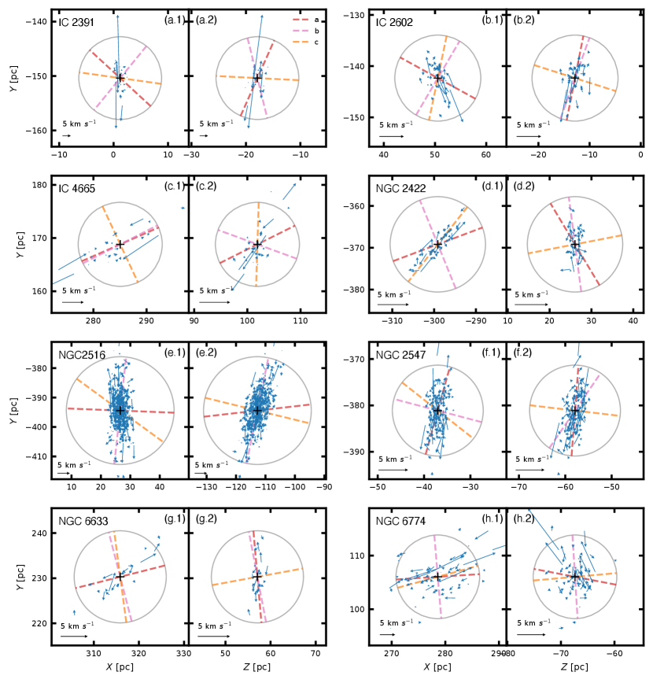
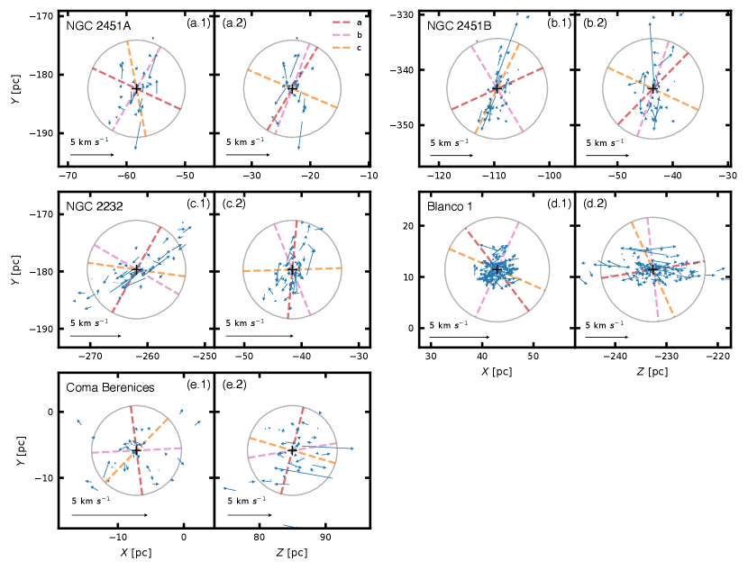
من أجل تحليل الحالات الديناميكية للعناقيد المفتوحة المستهدفة لدينا كميا، نحسب تشتت RVs وPMs للأعضاء المرتبطين في كل مجموعة. دالة الاحتمالية لتوزيع RV عبارة عن مزيج من مكونين غوسيين، أحدهما لأعضاء الكتلة والآخر لنجوم المجال (المعادلتين 1 و8 في Cottaar et al., 2012). يتم توسيع التوزيع الغوسي لأعضاء الكتلة من خلال الحركات المدارية للأنظمة الثنائية التي لم يتم حلها، وكذلك من خلال عدم اليقين في قياس RV. لنمذجة التوسع الذي أدخلته النجوم الثنائية، اعتمدنا توزيعات المعلمات المدارية المميزة للنجوم من النوع الشمسي في المجال المجري: (1) توزيع الفترة المدارية اللوغاريتمية العادية للثنائيات (Raghavan et al., 2010)؛ (2) توزيع نسبة الكتلة المسطحة بين و (Duchêne & Kraus, 2013)؛ و (3) توزيع انحراف مسطح بين والقيمة القصوى (Parker & Goodwin, 2009). تعد المعلمات المعتمدة للنجوم الثنائية أكثر كفاءة من الناحية الحسابية ولكنها لا تزال قابلة للمقارنة بالنماذج الأكثر واقعية (مثلا، Marks et al., 2011; Marks & Kroupa, 2011). ومع ذلك، كما أشار Bravi et al. (2018)، فإن الخصائص الثنائية المحددة لا تؤثر بشكل كبير على النتائج النهائية المجهزة. يتم وصف وظيفة الاحتمالية لتوزيع PM ( و) من خلال ملفين تعريفيين غاوسيين (المعادلات 1–3 في Pang et al., 2018): مكون أعضاء المجموعة، والمكون الميداني (الأخير يمثل 5%). نحن نستخدم طريقة Markov Chain Monte Carlo (MCMC) للحصول على أفضل القيم الملائمة وحالات عدم اليقين المقابلة لتشتت سرعة RV وPM (الأعمدة 9–11 في الجدول 4).
يمكن استخدام تشتت السرعة المشتقة لتحديد معدل التوسع في كل مجموعة. تميل العناقيد ذات التشتت العالي السرعة إلى التوسع بشكل أسرع. استنادًا إلى نصف قطر الكتلة، (الجدول 1)، وتشتت سرعة 3D لكل مجموعة (الجدول 4)، فإننا نقدر كتلتها الديناميكية باستخدام المعادلة 1 في Fleck et al. (2006). تتراوح الكتل الديناميكية الناتجة (Mdyn) لكل مجموعة من 263 M☉ إلى 3368 M☉ (جدول عمود 1 8)، أعلى من القياس الضوئي المقدر الجماهير، 101 M☉ إلى 1973 M☉ (العمود 7 في الجدول 1). لم يتم حل هذا التناقض، حتى عندما قمنا بتصحيح كتلة النجوم الخافتة تحت Gaia EDR 3 من خلال استقراء دالة الكتلة (انظر العرض في Tang et al., 2019). لذلك، يشير هذا إلى أن غالبية التجمعات قد تكون فائقة الفيريالية وقد ينتهي بها الأمر بالتوسع مع تجاوز الطاقة الحركية لقوة الجاذبية.
نعرض اعتماد النسبة بين الكتلة الديناميكية والكتلة الضوئية على عمر الكتلة في الشكل 11. تزداد النسبة Mdyn/Mcl مع تقدم السن في التجمعات، خاصة بعد 300 Myr. أقدم مجموعة في العينة، NGC 6774، لديها أعلى نسبة Mdyn/Mcl، مما يؤكد أيضًا حالة الاضطراب الخاصة بها. على العكس من ذلك، فإن أصغر مجموعة في العينة، NGC 2232، لديها أدنى نسبة (Mdyn/M)، وهو ما يتوافق مع السيناريو الذي اقترحته Pang et al. (2020) بأن هذه المجموعة من المحتمل أن تمر بمرحلة إعادة التنشيط. من المحتمل أن تصل الكتلة إلى أقصى توسع لها قبل إعادة انهيارها لتشكيل عنقود فيريالي (مثلا، Kroupa et al., 2001).
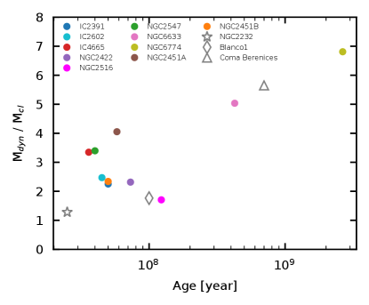
كما هو مقترح من عمليات المحاكاة (Baumgardt & Kroupa, 2007)، فإن الأعضاء النجمية سوف تكتسب سرعة تشتت عالية التباين بعد طرد الغاز السريع، وتشتت سرعة متناحية بعد طرد الغاز البطيئة. لوحظت درجة معينة من تباين السرعة في العناقيد المستهدفة ذات الهياكل الممدودة المكتشفة (NGC 2547، NGC 2451B، NGC 2516، NGC 6633، NGC 6774، Blanco 1، Coma Berenices) ولكن ليس في NGC 2232 (الجدول 4، الأعمدة 9–11). قد ينشأ تباين السرعة أيضًا من الدوران العالمي في مجموعات النجوم. التناوب العالمي ليس من غير المألوف. تم اكتشافه مؤخرًا في العنقود المفتوح Tr 15 (Kuhn et al., 2019). على الرغم من أن OCs قد ترث الزخم الزاوي من GMCs الأبوية، أو الهياكل الأساسية المدمجة، أو العناقيد المدمجة (مثلا، Priyatikanto et al., 2016; Zhong et al., 2019; Darma et al., 2019)، فقد تم إجراء محاولات قليلة لقياس الدوران في OCs. على عكس OCs، تم قياس الدوران في العناقيد الكروية (مثلا، Bianchini et al., 2018; Kamann et al., 2018). وفقًا لعمليات محاكاة الأجسام بواسطة Einsel & Spurzem (1999) وHong et al. (2013)، فإن الدوران يعزز فقدان الكتلة وبالتالي يسرع عملية تعطيل العناقيد. عادةً ما تكون سرعات الدوران العالمية أقل بكثير في OCs منها في العناقيد الكروية، وصولاً إلى مستوى أقل من km s-1. وتلزم دقة طيفية أعلى من أجل تحديد الخصائص الدورانية لعناقيدنا المفتوحة المستهدفة.
5.2 مقارنة مع النماذج العددية
من أجل تحديد خصائص عملية طرد الغاز للمجموعات المستهدفة 13 في هذه الدراسة، نقوم بإجراء عمليات محاكاة لجسم OCs مع أربع مجموعات مختلفة من الشروط الأولية، ونقارن النتائج العددية التي توصلنا إليها مع الملاحظات.
5.2.1 الشروط الأولية
يتم اختيار الكتلة الأولية للنماذج بحيث تكون كتلة الكتلة في مرحلة متطورة في عمر قابلة للمقارنة بكتلة العناقيد المرصودة. وفقًا لذلك، نعتمد ، و، و، و، و، وهو ما يتوافق مع عمليات محاكاة تكوين الكتلة في السحب الجزيئية (Bate, 2012). تتم تهيئة جميع النماذج العنقودية باستخدام نموذج بلامر في التوازن الفيريالي (Aarseth et al., 1974)، الذي يتميز بكتلة الكتلة الأولية ونصف قطر الكتلة . نلاحظ أن مجموعة أكبر بكثير من الشروط الأولية، بما في ذلك الهياكل الأساسية غير المتناظرة كرويًا، ممكنة (مثلا Moeckel & Bate, 2010; Fujii & Portegies Zwart, 2015). ومع ذلك، عادةً ما تختفي هذه البنية التحتية بسرعة (مثلا، عبر التغذية الراجعة من التأين الضوئي؛ González-Samaniego & Vazquez-Semadeni, 2020)، حيث تسترخي الكتلة وتحصل على تكوين متماثل كرويًا (Kroupa et al., 2001; Goodwin & Whitworth, 2004; Sills et al., 2018; Banerjee & Kroupa, 2018). تحدث هذه العملية قبل بداية طرد الغاز في نماذجنا. نظرًا لأن عدم اليقين بشأن آلية طرد الغاز من المحتمل أن يكون له تأثير أكثر بروزًا على ديناميكيات العناقيد مقارنة بالبنية التحتية الأولية، فإننا نركز على آلية طرد الغاز في الأنظمة الكروية في العمل الحالي.
يتم أخذ عينات من الكتل النجمية من دالة الكتلة الأولية Kroupa (2001) (IMF)، مع كتلة دنيا قدرها ، وأقصى كتلة يتم الحصول عليها باتباع علاقة الخاصة بـ Weidner et al. (2013)، حيث هي الكتلة القصوى للنجم المتكون في كتلة. من الكتلة . نحن نفترض وجود جزء ثنائي من 100% بين النجوم الأعضاء (انظر مثلا، Goodwin & Kroupa, 2005) والتوزيعات الأولية للعناصر المدارية (الدورات أو طاقات الربط، ونسب الكتلة، والاختلافات المركزية) المستمدة من توحيد التجمعات السكانية المرصودة في التجمعات السكانية الصغيرة جدًا التي تمر بمراحل مختلفة من المعالجة الديناميكية مع سكان المجال المجري (Kroupa, 1995a, b; Kroupa et al., 2001; Marks & Kroupa, 2011; Belloni et al., 2017).
تتحرك العناقيد في مدارات دائرية عبر المجرة في نصف قطر مركز المجرة kpc، وبسرعة مدارية تبلغ 220 km s-1. تم تطوير العناقيد المحاكاة حتى Myr؛ التطور الديناميكي هو الأبرز خلال هذه الفترة الزمنية. تغطي هذه الفئة العمرية ثلثي عمر مجموعاتنا المستهدفة. تمت تهيئة جميع النماذج الحالية كمجموعات نجمية مدمجة، أي تحتوي على المكونات النجمية والغازية. مع مرور الوقت، تتم طرد الغاز من الكتلة بسبب ردود الفعل من النجوم الضخمة. تم توضيح التفاصيل الفنية لعمليات محاكاة الأجسام في الملحق E.
في model S0 الأول، يرتبط نصف قطر الكتلة الأولي للكتلة بكتلة الكتلة الأولية ، بعد علاقة Marks & Kroupa (2012). تولد هذه الظروف الأولية عناقيد نجمية ذات أحجام صغيرة إلى حد ما ( pc) للمجموعات ذات الكتلة الأولية . يتميز الطراز S0 بكفاءة تكوين النجوم (SFE) البالغة والمقياس الزمني لطرد الغاز Myr، الذي يزيل الغاز على نطاق زمني أقصر من وقت العبور النجمي. وبعبارة أخرى، طرد الغازات يكون مندفعاً. لا يوجد فصل جماعي بدائي في هذا النموذج.
تتطابق العناقيد الموجودة في model S5 الثانية مع model S0، بصرف النظر عن الفصل الكتلي البدائي. يتم إنشاء الفرز الكتلي باستخدام طريقة Šubr et al. (2008)، مع مؤشر الفصل الكتلي الأولي . العناقيد في السيناريو الثالث (model AD) لها نطاق زمني أطول لطرد الغاز من Myr. وبالتالي، تتم طرد الغاز على نطاق زمني أطول من زمن عبور النجم؛ أي أن طرد الغاز يكون ثابت الحرارة. عادةً ما يؤثر طرد الغاز الأديابي على المجموعة بشكل أقل من طرد الغاز المندفع لنفس SFE (مثلا، Baumgardt & Kroupa, 2007; Dinnbier & Kroupa, 2020b). العناقيد في السيناريو الرابع (model WG) لا تحتوي على غاز، أي و، ولها أولي كبير من pc.
5.2.2 مقارنة مع العناقيد المستهدفة
يوضح الشكل 12 العلاقة بين نصف قطر الكتلة وكتلته الإجمالية وعمره (نظام الألوان). مباشرة بعد طرد الغاز، models S0 و S5 يزيدان من بشكل كبير. يتم إعادة تنشيطهما، وفي هذه المرحلة ينخفض كل من و. تتوسع العناقيد المنفصلة جماعيًا بشكل أساسي (model S5) بشكل أقل إلى حد ما. يتوافق تطور الكتلة العنقودية ونصف قطر الكتلة لكل من models S0 و S5 مع غالبية العناقيد المستهدفة (المثلثات)، حيث يوجد مجموعتان فقط (IC 2391 وIC 2602) لهما أنصاف أقطار مضغوطة جدًا بالنسبة لعمرهما وكتلتهما. وفي المقابل، فإن خصائص models AD وWG غير متوافقة مع العديد من العناقيد المستهدفة.
يشير الاتفاق بين النموذجين S0 وS5 مع العناقيد المستهدفة الأكثر ضخامة من إلى أن هذه العناقيد تشكّلت مع SFE منخفض نسبيًا (حوالي 1/3)، ومع طرد غاز عملية يعمل على نطاق زمني أقصر من زمن العبور النجمي. تم تقديم هذه النتيجة أيضًا في العمل السابق (Banerjee & Kroupa, 2017) للعناقيد النجمية الأكثر ضخامة ()، مما أدى إلى توسيع نتائجها لتشمل العناقيد النجمية وصولاً إلى الكتلة . دليل آخر على طرد الغاز السريع في هذه العناقيد هو القيمة الأعلى للكتلة الديناميكية مقارنة بالكتلة الضوئية.
كما هو مذكور أعلاه، يبدو أن حالة المجموعتين الأكثر ضغطًا (IC 2391 وIC 2602) تتعارض مع النموذجين S0 وS5. ومع ذلك، فإن هاتين المجموعتين تتفقان مع models AD. من المستحيل استخلاص نتيجة قاطعة من هذا بناءً على مجموعتين نجميتين فقط، لكن البيانات قد تشير إلى أن النطاق الزمني لطرد الغاز يتحول من ثابت الحرارة إلى مندفع عند كتلة العنقود ، في حين أن SFE لا يتغير بشكل كبير. من المتوقع نظريًا حدوث انخفاض في المقياس الزمني لطرد الغاز مع الكتلة العنقودية لأن الكتلة النجمية القصوى في الكتلة تزداد مع كتلة الكتلة (انظر Weidner et al., 2013, والمراجع الواردة فيه)، بحيث تزداد الطاقة الإجمالية للتغذية المرتدة الضوئية للكتلة مع كتلة الكتلة. تم أيضًا الإبلاغ عن انخفاض النطاق الزمني لطرد الغاز مع زيادة كتلة الكتلة في عمليات المحاكاة الهيدروديناميكية لـ Dinnbier & Walch (2020) والتحليل الرصدي الذي أجرته Pfalzner (2020).
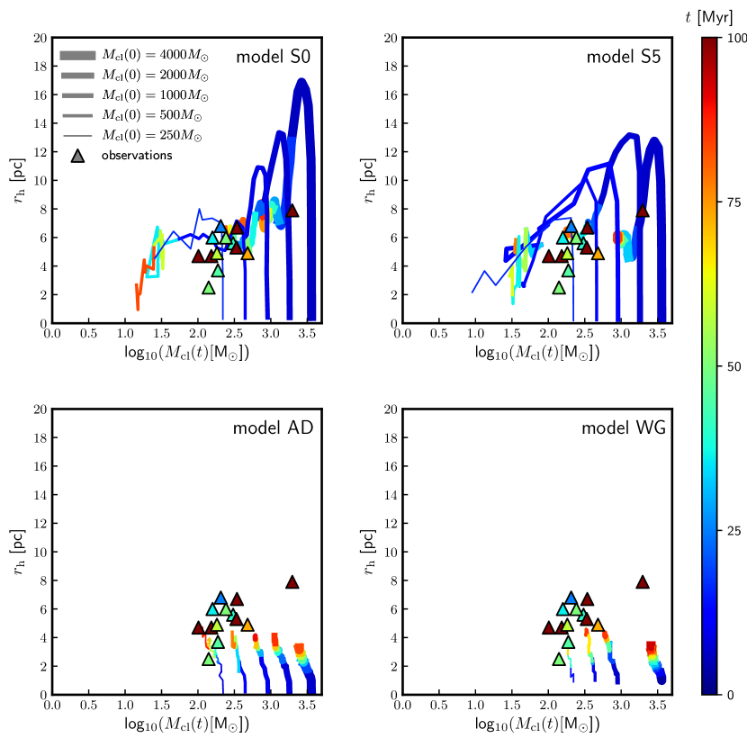
5.3 الفرز الكتلي
يوجد الفرز الكتلي بشكل شائع في العناقيد المدمجة والعناقيد النجمية الشابة، ويمكن أن يكون نتيجة للاسترخاء الديناميكي الداخلي، والاسترخاء العنيف و/أو الفصل الكتلي البدائي (Hillenbrand & Hartmann, 1998; Allison et al., 2009; Pang et al., 2013; Pavlík et al., 2019). أصغر مجموعة في أهدافنا، NGC 2232 لا تظهر أي دليل على الفرز الكتلي، بناءً على قياسات متوسط الكتلة في الحلقات المختلفة (Pang et al., 2020). ومع ذلك، تظهر مجموعتان متوسطتا العمر في عينتنا فصلًا جماعيًا. يُظهر Coma Berenices دليلاً على الفرز الكتلي الذي تم قياسه كميًا من خلال مقارنة التوزيعات الجماعية في الحلقات المختلفة (Tang et al., 2018)، ويظهر Blanco 1 دليلاً على الفرز الكتلي الذي تم الحصول عليه باستخدام طريقة (Zhang et al., 2020).
طريقة ، التي طورتها Allison et al. (2009)، هي أداة لتحليل درجة الفصل الكتلي لعنقود نجمي دون الحاجة إلى تحديد مركز العنقود. تقارن طريقة الحد الأدنى لطول المسار بين الأعضاء الأكثر ضخامة في () للمجموعة، مع الحد الأدنى لطول المسار للأعضاء العشوائيين ().
يتم حساب متوسط طول المسار الأدنى من الحد الأدنى للشجرة الممتدة (MST) لعينة النجوم، والتي تم الحصول عليها باستخدام حزمة Python MiSTree (Naidoo, 2019). عندما يتم فصل النجوم الضخمة ، يكون متوسط طول المسار لهذه المجموعة من النجوم، ، أصغر من مجموعة النجوم المختارة عشوائيًا ().
طبقت الدراسات السابقة طريقة على العناقيد النجمية باستخدام مواقع 2D المرصودة للنجوم في العناقيد. تتضمن الأمثلة دراسات NGC 3603 في Pang et al. (2013) وBlanco 1 في Zhang et al. (2020). ومع ذلك، يمكن لإسقاط 2D أن يبالغ في تقدير درجة الانفصال عن طريق إسقاط نجوم الخلفية التي تقع خلف مركز العنقود في المنطقة الداخلية. من خلال المواقع المكانية 3D المصححة للمسافة لأعضاء المجموعة المستهدفة، نحن قادرون على تحسين تحديد درجة الفصل الكتلي في مساحة 3D. يتم قياس أهمية الفرز الكتلي باستخدام ”نسبة الفرز الكتلي” (, Allison et al., 2009)، والتي تم تعريفها على أنها
| (2) |
حيث هو الانحراف المعياري لمجموعات 100 المختلفة من ، و هو متوسط طول مائة مجموعة عشوائية.
يعرض الشكل 13 للمجموعات، استنادًا إلى مواضع 3D و2D للأعضاء في كل مجموعة. كما يتبين من الشكل، تم العثور على دليل قوي على الفرز الكتلي في ست مجموعات، NGC 2422 (مفصولة حتى 3.6 M⊙)، NGC 6633 (2.2 M⊙)، NGC 6774 (1.6 M⊙)، NGC 2232 (2.1 M⊙)، Blanco 1 (1.5 M⊙) و Coma Berenices (1.1 M⊙)، متوافق مع الأعمال السابقة (Prisinzano et al., 2003; Kraus & Hillenbrand, 2007; Moraux et al., 2007; Tang et al., 2018; Yeh et al., 2019). في Coma Berenices، النجوم الأكثر ضخامة ليست الأكثر تركيزًا؛ من المحتمل أنهم طُردوا من مركز الكتلة عبر مواجهة قريبة مع النجوم الثنائية (مثلا، Oh et al., 2015; Oh & Kroupa, 2018). لم يتم العثور على أي دليل على الفرز الكتلي للمجموعات السبع المستهدفة الأخرى.
ستؤدي المسافة المتوقعة 2D إلى تقليل قيمة في المعادلة 2 من خلال إسقاط النجوم التي تقع بعيدًا عن مركز العنقود على المنطقة الداخلية. سيؤدي هذا إلى انخفاض في . ولذلك، فإن 2D MST على الأرجح سيقلل من تقدير درجة الفصل الكتلي في العنقود النجمي (الشكل 13).
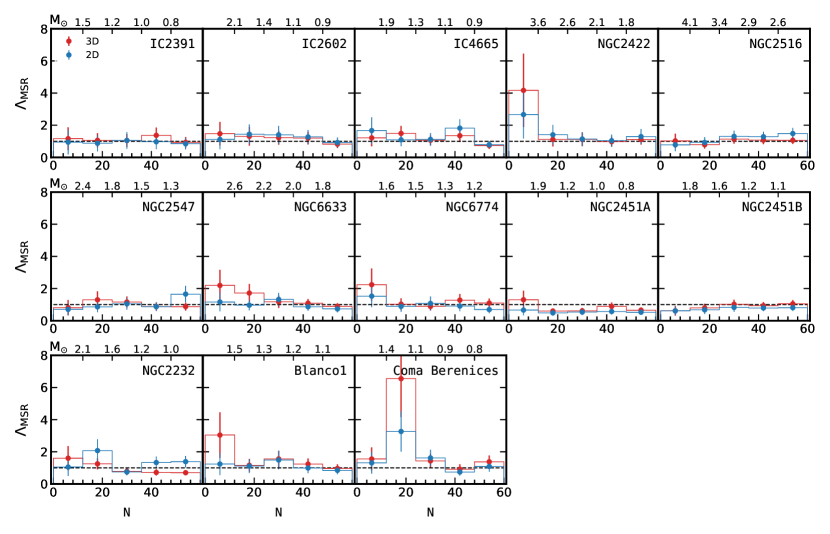
6 الملخص
باستخدام القياس الفلكي والقياس الضوئي عالي الدقة Gaia EDR 3، فإننا نطبق طريقة البحث العنقودي StarGO لتحديد النجوم الأعضاء في العناقيد المستهدفة 13: IC 2391، IC 2602، IC 4665، NGC 2422، NGC 2516، NGC 2547، NGC 6633، NGC 6774، NGC 2451A، وNGC 2451B، NGC 2232، Blanco 1، وComa Berenices في 5D الفضاء الطور للنجوم (، ). تتم مطابقة الأعضاء المحددين مع الأعضاء الموجودين في فهرسات Cantat-Gaudin et al. (2020) وLiu & Pang (2019). الأعمار التي تم الحصول عليها من تركيب الأيزوكرون لكل مجموعة تتفق مع تلك الدراسات السابقة. إجمالاً لدينا مجموعات مستهدفة 13 مع أعضاء محددين بنفس الطريقة، وتغطي نطاقًا عمريًا من 25 Myr إلى 2.65 Gyr، وتقع في الحي الشمسي حتى مسافة 500 pc. نقوم بتحليل مورفولوجيا 3D وديناميكيات المجموعة لمجموعات 13، ونحدد شكلها وحالتها الديناميكية. يتم إجراء عمليات محاكاة الأجسام لتحديد سيناريو طرد الغاز الذي يصف تاريخ هذه العناقيد النجمية بشكل أفضل. ويمكن تلخيص النتائج التي توصلنا إليها على النحو التالي.
-
1.
لقد استعدنا المسافة الفردية لكل عضو مرشح من اختلاف المنظر عن طريق طريقة بايزي. يتم تقدير حالات عدم اليقين في المسافات المصححة من خلال محاكاة مجموعات كروية ذات توزيع مكاني موحد للأعضاء، ومجموعات ذات أشكال ممدودة. المسافة المقدرة لنموذج كروي موحد الكثافة لها درجة عدم يقين تبلغ 3.0 pc في المسافة عندما تقع الكتلة في 500 pc. تعاني النماذج المطولة من قدر أكبر من عدم اليقين. والجدير بالذكر أنه عندما يكون الاستطالة على طول خط البصر، فإن عدم اليقين في المسافة يصل إلى 6.3 pc على مسافة 500 pc.
-
2.
لقد حددنا مورفولوجيا 3D للعناقيد المفتوحة المستهدفة 13، مع مواضع مصححة في الإحداثيات الديكارتية ذات المركز الشمسي (، ، و). واختير نموذج إهليلجي لملاءمة التوزيع المكاني للنجوم داخل نصف القطر المدي في جميع العناقيد. ويُستحصل نصف المحور الأكبر ، ونصف المحور المتوسط ، ونصف المحور الأصغر للمجسم الإهليلجي من الملاءمة. ونستخدم أطوال المحاور ، ، ، ونسب المحاور و بوصفها معلمات مورفولوجية لتكميم التوزيع 3D للمجموعات النجمية داخل أنصاف الأقطار المدية لـ OCs. ونعد اتجاه المحور الأكبر اتجاه الاستطالة المورفولوجية لكل عنقود. ولدى معظم العناقيد أنصاف محاور كبرى موازية للمستوى المجرّي أو مائلة قليلا بالنسبة إليه. والاستثناء الملحوظ هو Blanco 1، حيث يكون أقرب إلى الاتجاه الرأسي (). وتشبه أشكال توزيع المجموعات النجمية داخل نصف القطر المدي لخمس مجموعات (NGC 2547، NGC 2516، NGC 2451A، NGC 2451B، و NGC 2232) الأجسام الكروية المفلطحة، في حين تشبه عناقيد خمسة أخرى (IC 2602، IC 4665، NGC 2422، Blanco 1 وComa Berenices) الأجسام الكروية المتطاولة. أما شكل التجمعات النجمية داخل نصف القطر المدي للعناقيد الثلاثة الأخرى (IC 2391، NGC 6633، NGC 6774) فيوصف جيدا بإهليلجات ثلاثية المحاور.
-
3.
لوحظت استطالة كبيرة في المناطق المرتبطة بـ NGC 2422 وNGC 2457 وNGC 6633 وBlanco 1. وبالنظر إلى أن عدم اليقين في المسافة المصححة أصغر بكثير من حجم البنى الممدودة، فإن الاستطالات المقاسة لهذه العناقيد متينة. ومن بين هذه العناقيد يبرز Blanco 1 لأن شكله الممدود يميل بدرجة كبيرة (بمقدار ) بالنسبة إلى المستوى المجرّي. وقد تكون استطالة المنطقة المرتبطة مدفوعة بتبخر النجوم عبر نقطتي لاغرانج. وقد تكون مورفولوجيا 3D لـ Blanco 1 نتيجة للتمدد الناجم عن طرد الغاز السريع والوصول إلى التوازن الفيريالي. وعُثر على بنى فرعية ممدودة شبيهة بالخيوط في ثلاثة عناقيد فتية، هي NGC 2232، وNGC 2547، وNGC 2451B، في حين عُثر على بنى فرعية تشبه الذيول المدية في العناقيد الأقدم NGC 2516، وNGC 6633، وNGC 6774. وتأكدت مرة أخرى الذيول المدية العملاقة في Blanco 1 وComa Berenices باستخدام Gaia EDR 3.
- 4.
-
5.
يتم تنفيذ أربعة نماذج من عمليات محاكاة الأجسام لتحديد خصائص عملية طرد الغاز التي حدثت في العناقيد المستهدفة: (1) نموذج غير معزول عن الكتلة مع طرد الغاز المندفع؛ (ثانيا) نموذج معزول جماعيا مع طرد الغاز الاندفاعي؛ (ثالثا) نموذج مع طرد الغاز ثابت الحرارة؛ و(رابعا) نموذج بدون غاز. تتوافق جميع العناقيد المستهدفة ذات الكتلة الأكبر من 250 M⊙ مع نماذج طرد الغاز السريع (المندفع) مع SFE منخفض إلى حد ما من ، للنماذج مع أو بدون فصل الكتلة البدائية. تتوافق العناقيد المستهدفة ذات الكتلة الأصغر من 250 M⊙ مع نماذج طرد الغاز البطيء (الثابت الحرارة) مع SFE من . على الرغم من أن النتائج الخاصة بالعناقيد التي تزيد كتلتها عن 250 M⊙ تبدو قوية، إلا أن نتائج العناقيد ذات الكتلة المنخفضة هي نتائج مؤقتة فقط لأنها تعتمد فقط على عينة من مجموعتين. إذا تم تأكيد انخفاض النطاق الزمني لطرد الغاز مع زيادة كتلة الكتلة لمزيد من العناقيد في المستقبل، فقد يشير هذا إلى دور بارز لردود الفعل من النجوم الضخمة في التطور المبكر للعناقيد النجمية. النماذج التي لا تحتوي على طرد الغاز، أي النماذج التي تفترض كفاءة تكوين النجوم بنسبة 100 بالمائة، غير متوافقة مع البيانات.
-
6.
من أجل تحديد درجة الفصل الكتلي في كل مجموعة، نطبق كلاً من أساليب 3D و2D MST على OCs في العينة. تم العثور على ستة من OCs في عينتنا لديها فصل جماعي: NGC 2422، NGC 6633، وNGC 6774، NGC 2232، Blanco 1، وComa Berenices.
تعد دراستنا لهذه العناقيد المفتوحة 13 محاولة رائدة في الدراسة الكمية لمورفولوجيا العنقود وعلاقتها بتكوين العناقيد النجمية وتطورها المبكر. يمكن تطبيق الأساليب التي تم تطويرها في هذا العمل لدراسة عينة أكبر بكثير من OCs تغطي مواقع مختلفة ببيانات من Gaia EDR 3 وDR 3، بهدف تحقيق تفسير أفضل لاعتماد مورفولوجية 3D العناقيد المفتوحة على موقع العناقيد النجمية في المجرة.
References
- Aarseth (2003) Aarseth, S. J. 2003, Gravitational N-Body Simulations (Cambridge: Cambridge University Press)
- Aarseth et al. (1974) Aarseth, S. J., Henon, M., & Wielen, R. 1974, A&A, 37, 183
- Ahmad & Cohen (1973) Ahmad, A. & Cohen, L. 1973, Journal of Computational Physics, 12, 389
- Allen & Santillan (1991) Allen, C. & Santillan, A. 1991, Rev. Mexicana Astron. Astrofis., 22, 255
- Allison et al. (2009) Allison, R. J., Goodwin, S. P., Parker, R. J., et al. 2009, ApJ, 700, L99. doi:10.1088/0004-637X/700/2/L99
- Astropy Collaboration et al. (2013) Astropy Collaboration, Robitaille, T. P., Tollerud, E. J., et al. 2013, A&A, 558, A33
- Astropy Collaboration et al. (2018) Astropy Collaboration, Price-Whelan, A. M., Sipőcz, B. M., et al. 2018, AJ, 156, 123
- Bailer-Jones (2015) Bailer-Jones, C. A. L. 2015, PASP, 127, 994
- Bailey et al. (2018) Bailey, J. I., Mateo, M., White, R. J., et al. 2018, MNRAS, 475, 1609. doi:10.1093/mnras/stx3266
- Ballone et al. (2020) Ballone, A., Mapelli, M., Di Carlo, U. N., et al. 2020, MNRAS, 496, 49. doi:10.1093/mnras/staa1383
- Balog et al. (2009) Balog, Z., Kiss, L. L., Vinkó, J., et al. 2009, ApJ, 698, 1989. doi:10.1088/0004-637X/698/2/1989
- Bate (2012) Bate, M. R. 2012, MNRAS, 419, 3115. doi:10.1111/j.1365-2966.2011.19955.x
- Banerjee & Kroupa (2017) Banerjee S., Kroupa P., 2017, A&A, 597, A28
- Banerjee & Kroupa (2018) Banerjee, S. & Kroupa, P. 2018, Formation of Very Young Massive Clusters and Implications for Globular Clusters, ed. S. Stahler, Vol. 424, 143
- Bastian & de Mink (2009) Bastian, N. & de Mink, S. E. 2009, MNRAS, 398, L11. doi:10.1111/j.1745-3933.2009.00696.x
- Baumgardt & Kroupa (2007) Baumgardt, H., & Kroupa, P. 2007, MNRAS, 380, 1589
- Beccari et al. (2020) Beccari, G., Boffin, H. M. J., & Jerabkova, T. 2020, MNRAS, 491, 2205
- Belloni et al. (2017) Belloni, D., Askar, A., Giersz, M., et al. 2017, MNRAS, 471, 2812. doi:10.1093/mnras/stx1763
- Benacchio & Galletta (1980) Benacchio, L. & Galletta, G. 1980, MNRAS, 193, 885. doi:10.1093/mnras/193.4.885
- Bergond et al. (2001) Bergond, G., Leon, S., & Guibert, J. 2001, A&A, 377, 462. doi:10.1051/0004-6361:20011043
- Bianchini et al. (2018) Bianchini, P., van der Marel, R. P., del Pino, A., et al. 2018, MNRAS, 481, 2125. doi:10.1093/mnras/sty2365
- Boubert et al. (2019) Boubert, D., Strader, J., Aguado, D., et al. 2019, MNRAS, 486, 2618. doi:10.1093/mnras/stz253
- Bovy (2017) Bovy, J. 2017, MNRAS, 468, L63
- Brandner (2008) Brandner, W. 2008, arXiv:0803.1974
- Bravi et al. (2018) Bravi, L., Zari, E., Sacco, G. G., et al. 2018, A&A, 615, A37
- Cantat-Gaudin et al. (2018) Cantat-Gaudin, T., Jordi, C., Vallenari, A., et al. 2018, A&A, 618, A93.
- Cantat-Gaudin et al. (2020) Cantat-Gaudin, T., Anders, F., Castro-Ginard, A., et al. 2020, A&A, 640, A1. doi:10.1051/0004-6361/202038192
- Cantat-Gaudin & Anders (2020) Cantat-Gaudin, T. & Anders, F. 2020, A&A, 633, A99. doi:10.1051/0004-6361/201936691
- Castro-Ginard et al. (2018) Castro-Ginard, A., Jordi, C., Luri, X., et al. 2018, A&A, 618, A59. doi:10.1051/0004-6361/201833390
- Castro-Ginard et al. (2019) Castro-Ginard, A., Jordi, C., Luri, X., et al. 2019, A&A, 627, A35. doi:10.1051/0004-6361/201935531
- Castro-Ginard et al. (2020) Castro-Ginard, A., Jordi, C., Luri, X., et al. 2020, A&A, 635, A45. doi:10.1051/0004-6361/201937386
- Carrera et al. (2019) Carrera, R., Pasquato, M., Vallenari, A., et al. 2019, A&A, 627, A119
- Chen et al. (2004) Chen, W. P., Chen, C. W., & Shu, C. G. 2004, AJ, 128, 2306. doi:10.1086/424855
- Chen et al. (2001) Chen, B., Stoughton, C., Smith, J. A., et al. 2001, ApJ, 553, 184.
- Cottaar et al. (2012) Cottaar, M., Meyer, M. R., & Parker, R. J. 2012, A&A, 547, A35. doi:10.1051/0004-6361/201219673
- Curry (2002) Curry, C. L. 2002, ApJ, 576, 849. doi:10.1086/341811
- D’Antona et al. (2017) D’Antona, F., Milone, A. P., Tailo, M., et al. 2017, Nature Astronomy, 1, 0186. doi:10.1038/s41550-017-0186
- Darma et al. (2019) Darma, R., Arifyanto, M. I., & Kouwenhoven, M. B. N. 2019, Journal of Physics Conference Series, 1231, 012028. doi:10.1088/1742-6596/1231/1/012028
- Dinnbier & Kroupa (2020a) Dinnbier, F. & Kroupa, P. 2020, A&A, 640, A85. doi:10.1051/0004-6361/201936572
- Dinnbier & Kroupa (2020b) Dinnbier, F. & Kroupa, P. 2020, A&A, 640, A84. doi:10.1051/0004-6361/201936570
- Dinnbier & Walch (2020) Dinnbier, F. & Walch, S. 2020, MNRAS, 499, 748. doi:10.1093/mnras/staa2560
- Duchêne & Kraus (2013) Duchêne, G. & Kraus, A. 2013, ARA&A, 51, 269. doi:10.1146/annurev-astro-081710-102602
- Fleck et al. (2006) leck, J.-J., Boily, C. M., Lançon, A., et al. 2006, MNRAS, 369, 1392. doi:10.1111/j.1365-2966.2006.10390.x
- Fujii & Portegies Zwart (2015) Fujii, M. S. & Portegies Zwart, S. 2015, MNRAS, 449, 726
- Goodwin & Whitworth (2004) Goodwin, S. P. & Whitworth, A. P. 2004, A&A, 413, 929
- Einsel & Spurzem (1999) Einsel, C. & Spurzem, R. 1999, MNRAS, 302, 81. doi:10.1046/j.1365-8711.1999.02083.x
- Fürnkranz et al. (2019) Fürnkranz, V., Meingast, S., & Alves, J. 2019, A&A, 624, L11. doi:10.1051/0004-6361/201935293
- Gaia Collaboration et al. (2020) Gaia Collaboration, Brown, A. G. A., Vallenari, A., et al. 2020, arXiv:2012.01533
- Gaia Collaboration et al. (2018b) Gaia Collaboration, Babusiaux, C., van Leeuwen, F., et al. 2018, A&A, 616, A10
- Gaia Collaboration et al. (2018a) Gaia Collaboration, Brown, A. G. A., Vallenari, A., et al. 2018, A&A, 616, A1
- Gentile Fusillo et al. (2019) Gentile Fusillo, N. P., Tremblay, P.-E., Gänsicke, B. T., et al. 2019, MNRAS, 482, 4570. doi:10.1093/mnras/sty3016
- Getman et al. (2018) Getman, K. V., Kuhn, M. A., Feigelson, E. D., et al. 2018, MNRAS, 477, 298. doi:10.1093/mnras/sty473
- Gillessen et al. (2009) Gillessen, S., Eisenhauer, F., Trippe, S., et al. 2009, ApJ, 692, 1075.
- Gilmore et al. (2012) Gilmore, G., Randich, S., Asplund, M., et al. 2012, The Messenger, 147, 25
- Goodwin & Kroupa (2005) Goodwin, S. P. & Kroupa, P. 2005, A&A, 439, 565. doi:10.1051/0004-6361:20052654
- González-Samaniego & Vazquez-Semadeni (2020) González-Samaniego, A. & Vazquez-Semadeni, E. 2020, MNRAS, 499, 668. doi:10.1093/mnras/staa2921
- Hillenbrand & Hartmann (1998) Hillenbrand, L. A. & Hartmann, L. W. 1998, ApJ, 492, 540. doi:10.1086/305076
- Hong et al. (2013) Hong, J., Kim, E., Lee, H. M., et al. 2013, MNRAS, 430, 2960. doi:10.1093/mnras/stt099
- Hurley et al. (2000) Hurley, J. R., Pols, O. R., & Tout, C. A. 2000, MNRAS, 315, 543
- Hurley et al. (2002) Hurley, J. R., Tout, C. A., & Pols, O. R. 2002, MNRAS, 329, 897
- Jackson et al. (2020) Jackson, R. J., Jeffries, R. D., Wright, N. J., et al. 2020, MNRAS, doi:10.1093/mnras/staa1749
- Jeans (1916) Jeans, J. H. 1916, MNRAS, 76, 567. doi:10.1093/mnras/76.7.567
- Jerabkova et al. (2019) Jerabkova, T., Boffin, H. M. J., Beccari, G., et al. 2019, MNRAS, 489, 4418
- Jones & Basu (2002) Jones, C. E. & Basu, S. 2002, ApJ, 569, 280. doi:10.1086/339230
- Kamann et al. (2018) Kamann, S., Husser, T.-O., Dreizler, S., et al. 2018, MNRAS, 473, 5591. doi:10.1093/mnras/stx2719
- Karnath et al. (2019) Karnath, N., Prchlik, J. J., Gutermuth, R. A., et al. 2019, ApJ, 871, 46. doi:10.3847/1538-4357/aaf4c1
- Koester & Reimers (1996) Koester, D. & Reimers, D. 1996, A&A, 313, 810
- Kounkel & Covey (2019) Kounkel, M., & Covey, K. 2019, AJ, 158, 122
- Kouwenhoven & de Grijs (2008) Kouwenhoven, M. B. N. & de Grijs, R. 2008, A&A, 480, 103. doi:10.1051/0004-6361:20078897
- Kraus & Hillenbrand (2007) Kraus, A. L. & Hillenbrand, L. A. 2007, AJ, 134, 2340. doi:10.1086/522831
- Kroupa (1995a) Kroupa, P. 1995, MNRAS, 277, 1491. doi:10.1093/mnras/277.4.1491
- Kroupa (1995b) Kroupa, P. 1995, MNRAS, 277, 1507. doi:10.1093/mnras/277.4.1507
- Kroupa et al. (2001) Kroupa, P., Aarseth, S., & Hurley, J. 2001, MNRAS, 321, 699. doi:10.1046/j.1365-8711.2001.04050.x
- Kroupa (2001) Kroupa, P. 2001, MNRAS, 322, 231
- Kruijssen et al. (2012) Kruijssen, J. M. D., Maschberger, T., Moeckel, N., et al. 2012, MNRAS, 419, 841. doi:10.1111/j.1365-2966.2011.19748.x
- Krumholz & Matzner (2009) Krumholz, M. R. & Matzner, C. D. 2009, ApJ, 703, 1352. doi:10.1088/0004-637X/703/2/1352
- Kuhn et al. (2019) Kuhn, M. A., Hillenbrand, L. A., Sills, A., et al. 2019, ApJ, 870, 32. doi:10.3847/1538-4357/aaef8c
- Kustaanheimo & Stiefel (1965) Kustaanheimo, P. & Stiefel, E. 1965, Reine Angew. Math., 218, 204
- Küpper et al. (2011) Küpper, A. H. W., Maschberger, T., Kroupa, P., & Baumgardt, H. 2011, MNRAS, 417, 2300
- Küpper et al. (2008) Küpper, A. H. W., MacLeod, A., & Heggie, D. C. 2008, MNRAS, 387, 1248. doi:10.1111/j.1365-2966.2008.13323.x
- Lada & Lada (2003) Lada, C. J., & Lada, E. A. 2003, ARA&A, 41, 57
- Lamers et al. (2005) Lamers, H. J. G. L. M., Gieles, M., Bastian, N., et al. 2005, A&A, 441, 117. doi:10.1051/0004-6361:20042241
- Li et al. (2014) Li, C., de Grijs, R., & Deng, L. 2014, Nature, 516, 367. doi:10.1038/nature13969
- Li et al. (2017) Li, C., de Grijs, R., Deng, L., et al. 2017, ApJ, 844, 119. doi:10.3847/1538-4357/aa7b36
- Li et al. (2019) Li, C., Sun, W., de Grijs, R., et al. 2019, ApJ, 876, 65. doi:10.3847/1538-4357/ab15d2
- Lindegren et al. (2018) Lindegren, L., Hernández, J., Bombrun, A., et al. 2018, A&A, 616, A2
- Liu & Pang (2019) Liu, L., & Pang, X. 2019, ApJS, 245, 32
- Makino (1991) Makino, J. 1991, ApJ, 369, 200
- Makino & Aarseth (1992) Makino, J. & Aarseth, S. J. 1992, PASJ, 44, 141
- Marsden et al. (2009) Marsden, S. C., Carter, B. D., & Donati, J.-F. 2009, MNRAS, 399, 888. doi:10.1111/j.1365-2966.2009.15319.x
- Maíz Apellániz & Weiler (2018) Maíz Apellániz, J. & Weiler, M. 2018, A&A, 619, A180. doi:10.1051/0004-6361/201834051
- Marks & Kroupa (2011) Marks, M. & Kroupa, P. 2011, MNRAS, 417, 1702. doi:10.1111/j.1365-2966.2011.19519.x
- Marks et al. (2011) Marks, M., Kroupa, P., & Oh, S. 2011, MNRAS, 417, 1684. doi:10.1111/j.1365-2966.2011.19257.x
- Marks & Kroupa (2012) Marks, M. & Kroupa, P. 2012, A&A, 543, A8
- Meingast & Alves (2019) Meingast, S. & Alves, J. 2019, A&A, 621, L3. doi:10.1051/0004-6361/201834622
- Mikkola & Aarseth (1990) Mikkola, S. & Aarseth, S. J. 1990, Celestial Mechanics and Dynamical Astronomy, 47, 375
- Milone et al. (2018) Milone, A. P., Marino, A. F., Di Criscienzo, M., et al. 2018, MNRAS, 477, 2640. doi:10.1093/mnras/sty661
- Miret-Roig et al. (2019) Miret-Roig, N., Bouy, H., Olivares, J., et al. 2019, A&A, 631, A57. doi:10.1051/0004-6361/201935518
- Millman et al. (2011) Millman, K. J., Aivazis, M.. 2011, Computing in Science & Engineering, 13, 2, 9
- Moe & Di Stefano (2017) Moe, M. & Di Stefano, R. 2017, ApJS, 230, 15
- Moeckel & Bate (2010) Moeckel, N. & Bate, M. R. 2010, MNRAS, 404, 721
- Moraux et al. (2007) Moraux, E., Bouvier, J., Stauffer, J. R., et al. 2007, A&A, 471, 499. doi:10.1051/0004-6361:20066308
- Naidoo (2019) Naidoo, K. 2019, The Journal of Open Source Software, 4, 1721. doi:10.21105/joss.01721
- Nilakshi et al. (2002) Nilakshi, Sagar, R., Pandey, A. K., et al. 2002, A&A, 383, 153. doi:10.1051/0004-6361:20011719
- Oh et al. (2015) Oh, S., Kroupa, P., & Pflamm-Altenburg, J. 2015, ApJ, 805, 92. doi:10.1088/0004-637X/805/2/92
- Oh & Kroupa (2018) Oh, S. & Kroupa, P. 2018, MNRAS, 481, 153. doi:10.1093/mnras/sty2245
- Olivares et al. (2019) Olivares, J., Bouy, H., Sarro, L. M., et al. 2019, A&A, 625, A115. doi:10.1051/0004-6361/201834924
- Oort (1979) Oort, J. H. 1979, A&A, 78, 312
- McKee & Ostriker (1977) McKee, C. F. & Ostriker, J. P. 1977, ApJ, 218, 148. doi:10.1086/155667
- Meingast et al. (2020) Meingast, S., Alves, J., & Rottensteiner, A. 2020, arXiv:2010.06591
- Padilla & Strauss (2008) Padilla, N. D. & Strauss, M. A. 2008, MNRAS, 388, 1321. doi:10.1111/j.1365-2966.2008.13480.x
- Pang et al. (2013) Pang, X., Grebel, E. K., Allison, R. J., et al. 2013, ApJ, 764, 73
- Pang et al. (2018) Pang, X., Shen, S., & Shao, Z. 2018, ApJ, 868, L9. doi:10.3847/2041-8213/aaedaa
- Pang et al. (2020) Pang, X., Li, Y., Tang, S.-Y., et al. 2020, ApJ, 900, L4. doi:10.3847/2041-8213/abad28
- Parker & Goodwin (2009) Parker, R. J. & Goodwin, S. P. 2009, MNRAS, 397, 1041. doi:10.1111/j.1365-2966.2009.15037.x
- Pavlík et al. (2019) Pavlík, V., Kroupa, P., & Šubr, L. 2019, A&A, 626, A79. doi:10.1051/0004-6361/201834265
- Pfalzner (2020) Pfalzner, S. 2020, in Star Clusters: From the Milky Way to the Early Universe, ed. A. Bragaglia, M. Davies, A. Sills, & E. Vesperini, Vol. 351, 208–211
- Pinfield et al. (1998) Pinfield, D. J., Jameson, R. F., & Hodgkin, S. T. 1998, MNRAS, 299, 955
- Röser et al. (2019) Röser, S., Schilbach, E., & Goldman, B. 2019, A&A, 621, L2
- Postnikova et al. (2020) Postnikova, E. S., Elsanhoury, W. H., Sariya, D. P., et al. 2020, Research in Astronomy and Astrophysics, 20, 016. doi:10.1088/1674-4527/20/2/16
- Prisinzano et al. (2003) Prisinzano, L., Micela, G., Sciortino, S., et al. 2003, A&A, 404, 927. doi:10.1051/0004-6361:20030524
- Priyatikanto et al. (2016) Priyatikanto, R., Kouwenhoven, M. B. N., Arifyanto, M. I., et al. 2016, MNRAS, 457, 1339. doi:10.1093/mnras/stw060
- Raghavan et al. (2010) Raghavan, D., McAlister, H. A., Henry, T. J., et al. 2010, ApJS, 190, 1. doi:10.1088/0067-0049/190/1/1
- Rybizki et al. (2018) Rybizki, J., Demleitner, M., Fouesneau, M., et al. 2018, PASP, 130, 74101.
- Sánchez & Alfaro (2009) Sánchez, N. & Alfaro, E. J. 2009, ApJ, 696, 2086. doi:10.1088/0004-637X/696/2/2086
- Sana et al. (2012) Sana, H., de Mink, S. E., de Koter, A., et al. 2012, Science, 337, 444 s
- Seabroke et al. (2020) Seabroke, G., Cropper, M., Baker, S., et al. 2020, arXiv:2010.16337
- Sills et al. (2018) Sills, A., Rieder, S., Scora, J., McCloskey, J., & Jaffa, S. 2018, MNRAS, 477, 1903
- Spitzer (1958) Spitzer, L. 1958, ApJ, 127, 17. doi:10.1086/146435
- Spurzem (1999) Spurzem, R. 1999, Journal of Computational and Applied Mathematics, 109, 407
- Šubr et al. (2008) Šubr, L., Kroupa, P., & Baumgardt, H. 2008, MNRAS, 385, 1673
- Tang et al. (2018) Tang, S.-Y., Chen, W. P., Chiang, P. S., et al. 2018, ApJ, 862, 106. doi:10.3847/1538-4357/aacb7a
- Tang et al. (2019) Tang, S.-Y., Pang, X., Yuan, Z., et al. 2019, ApJ, 877, 12
- Taylor (2005) Taylor, M. B. 2005, Astronomical Data Analysis Software and Systems XIV, 29
- Tian (2020) Tian, H.-J. 2020, ApJ, 904, 196. doi:10.3847/1538-4357/abbf4b
- Torra et al. (2020) Torra, F., Castañeda, J., Fabricius, C., et al. 2020, arXiv:2012.06420
- Tout et al. (1996) Tout, C. A., Pols, O. R., Eggleton, P. P., & Han, Z. 1996, MNRAS, 281, 257
- Wang et al. (2015) Wang, L., Spurzem, R., Aarseth, S., et al. 2015, MNRAS, 450, 4070. doi:10.1093/mnras/stv817
- Wang et al. (2016) Wang, L., Spurzem, R., Aarseth, S., et al. 2016, MNRAS, 458, 1450. doi:10.1093/mnras/stw274
- Weaver et al. (1977) Weaver, R., McCray, R., Castor, J., et al. 1977, ApJ, 218, 377. doi:10.1086/155692
- Weidner et al. (2013) Weidner, C., Kroupa, P., & Pflamm-Altenburg, J. 2013, MNRAS, 434, 84
- Williams & Bolte (2007) Williams, K. A. & Bolte, M. 2007, AJ, 133, 1490. doi:10.1086/511675
- Yeh et al. (2019) Yeh, F. C., Carraro, G., Montalto, M., et al. 2019, AJ, 157, 115. doi:10.3847/1538-3881/aaff6c
- Yuan et al. (2018) Yuan, Z., Chang, J., Banerjee, P., et al. 2018, ApJ, 863, 26
- Zhang et al. (2020) Zhang, Y., Tang, S.-Y., Chen, W. P., et al. 2020, ApJ, 889, 99
- Zhong et al. (2019) Zhong, J., Chen, L., Kouwenhoven, M. B. N., et al. 2019, A&A, 624, A34. doi:10.1051/0004-6361/201834334
Appendix A الإحداثيات الديكارتية المجرية/متمركزة حول الشمس المستخدمة في هذه الدراسة
يقع مركز المجرة ( و) في أصل نظام الإحداثيات الديكارتي المجري. تقع الشمس 27 pc فوق المستوى الأوسط للمجرة، و8.3 kpc من مركز المجرة (Chen et al., 2001; Gillessen et al., 2009). يشير المحور الموجب من إسقاط موقع الشمس على المستوى المتوسط للمجرة باتجاه مركز المجرة. يشير المحور الموجب نحو ، ويشير المحور الموجب إلى . أصل نظام الإحداثيات الديكارتية الشمسي هو مركز ثقل النظام الشمسي، بينما يبقى اتجاه المحاور دون تغيير.
Appendix B أرقام للقسم 2
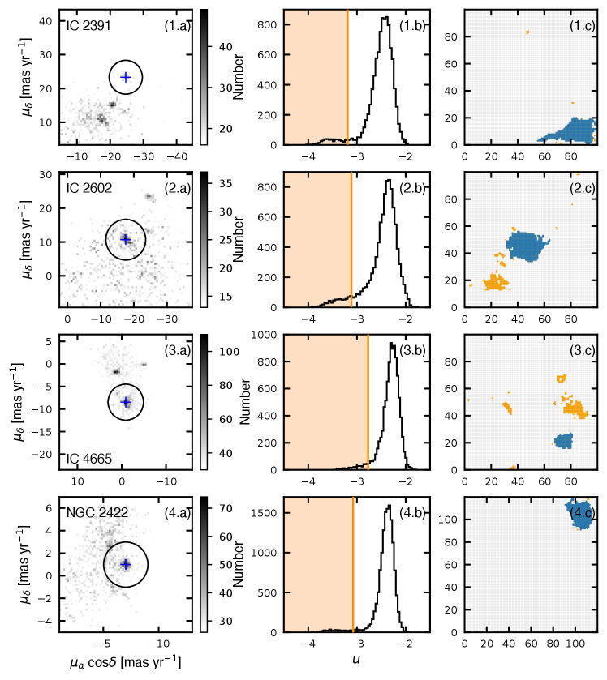
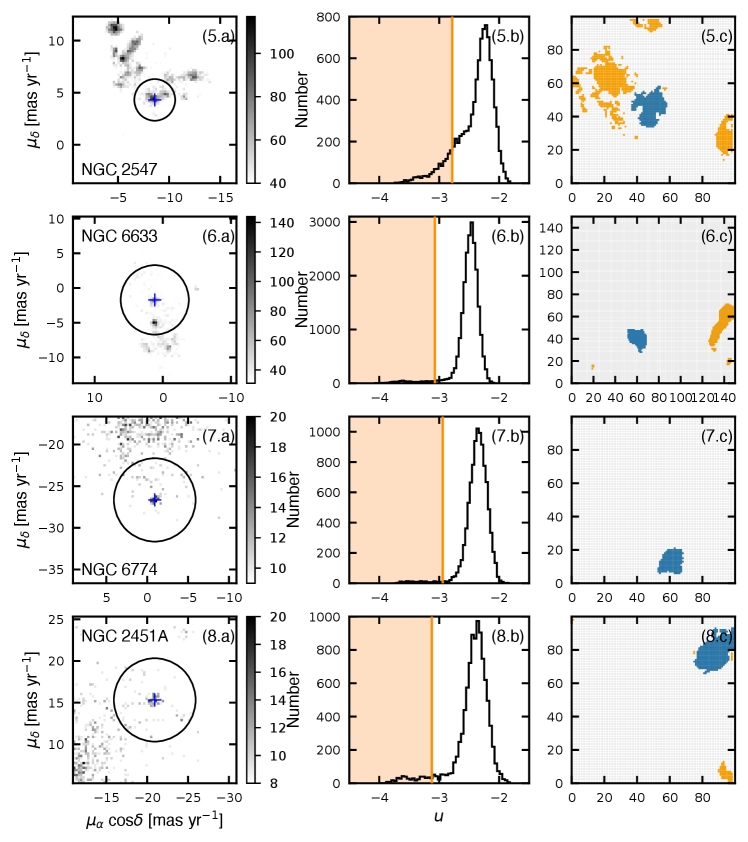
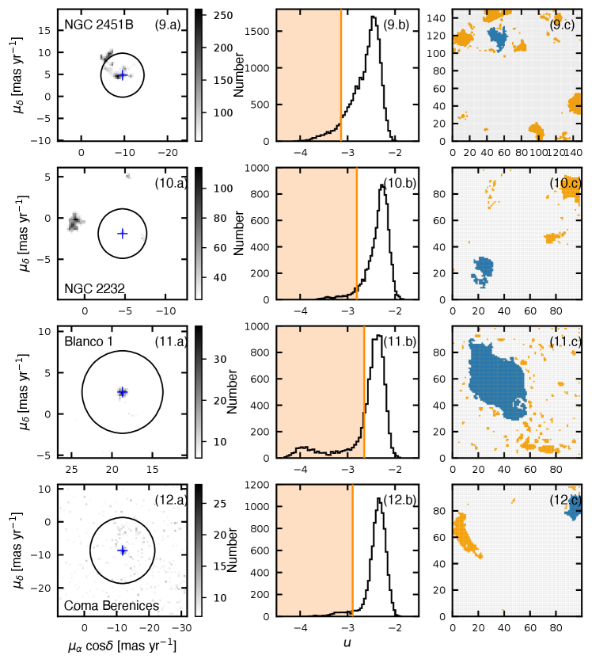
Appendix C تقدير عدم اليقين في المسافة المصححة
نصف في هذا القسم عمليات محاكاة مونت كارلو التي تم إجراؤها لتحديد كمية عدم اليقين في المسافات المصححة إلى النجوم الفردية باستخدام طريقة بايزي. في الخطوة الأولى، نقوم بإنشاء مجموعات محاكاة لنموذج الملاحظات. يتم توزيع ألف نجم بشكل موحد داخل دائرة نصف قطرها 10 pc. تم وضع المجموعة أولاً على مسافة 50 pc. يتم تعيين اختلاف المنظر الأولي (يشار إليه فيما يلي باسم المنظر (I)، في الخطوة I) لكل نجم من خلال عكس المسافة الأصلية. لمحاكاة أخطاء اختلاف المنظر المرصودة، قمنا بإعادة تشكيل اختلاف المنظر المرصود (I) من توزيع غاوسي، مع اختلاف المنظر الأولي باعتباره المتوسط وخطأ اختلاف المنظر المتوسط بين أعضاء جميع العناقيد (0.046 mas yr-1) باعتباره الانحراف المعياري. يتم تحويل اختلاف المنظر المرصود (I) إلى مسافة ملحوظة (I) عن طريق التبادل. يتم إنشاء عنقود ممدود اصطناعيًا عن طريق تمديد مجموعة النجوم على طول خط البصر، على غرار الملاحظات. نحن نطبق الطريقة البايزية لتصحيح المسافات المرصودة للنجوم الفردية. للحفاظ على الاتساق مع تحديد العضوية المطبق في القسم 2.2، نعتمد احتمالية العضوية 95% لكل نجم. تم اعتماد الفرق بين المسافة المصححة (I) والمسافة الأصلية باعتباره عدم اليقين في الطريقة البايزية. نقوم بزيادة مسافة المجموعة المحاكية بخطوات 50 pc حتى مسافة 500 pc. نكرر هذا الإجراء لمجموعة عمليات محاكاة 100 من أجل الحصول على نتيجة موثوقة إحصائيًا.
يمكن تمديد OCs بشكل جوهري. لمزيد من التحقيق في اعتماد تصحيح المسافة على المورفولوجيا الجوهري للمجموعات النجمية، قمنا أيضًا إنشاء OCs الممدود بشكل جوهري. لتبسيط الإجراء، فإننا نعتبر المجموعة الممدودة بشكل مصطنع الناتجة عن الخطوة I كنقطة بداية في الخطوة II. في هذه الحالة، يعتبر الشكل المطول هو الشكل الأصلي للعنقود. تتم محاكاة نوعين من العناقيد الممدودة بشكل جوهري: (1) مجموعات ذات استطالة على طول خط البصر و (2) مجموعات ذات استطالة متعامدة مع خط البصر. نحصل على المنظر الأولي (II)، المنظر المرصود (II)، المسافة المرصودة (II)، والمسافة المصححة (II) باتباع نفس الإجراء كما في الخطوة I. تقع العناقيد المحاكاة الممدودة على مسافات تتراوح من 50 pc إلى 500 pc من الشمس. تتبع حالة عدم اليقين في المسافات المصححة للمجموعات الطويلة (المنحنيات المنقطة والمتقطعة في الشكل 4) اتجاهًا مشابهًا لتلك الموجودة في المجموعة الموحدة.
بشكل عام، تحتوي العناقيد المتطاولة بشكل جوهري على قدر أكبر من عدم اليقين في مسافاتها المصححة مقارنة بالعناقيد ذات التوزيع النجمي الكروي الموحد. عندما تكون الكتلة ممدودة بشكل عمودي على خط البصر، يكون عدم اليقين في المسافة المصححة قريبًا من النموذج الموحد للمسافات الأصغر من 300 pc تقريبًا. على مسافات أكبر من 300 pc، تكون الأخطاء في النماذج المطولة أكبر من تلك الموجودة في المجموعة الموحدة 3.0 pc، وتصل إلى 3.4 pc عند 500 pc. يختلف الوضع في النموذج مع الاستطالة على طول خط البصر. بالنسبة للمسافات الأكبر من 200 pc، تظهر هذه العناقيد انحرافات كبيرة في عدم اليقين للمسافة المصححة بالمقارنة مع النموذج الموحد، وتصل إلى عدم اليقين 6.3 pc على مسافة 500 pc.
Appendix D تركيب القطع الناقص
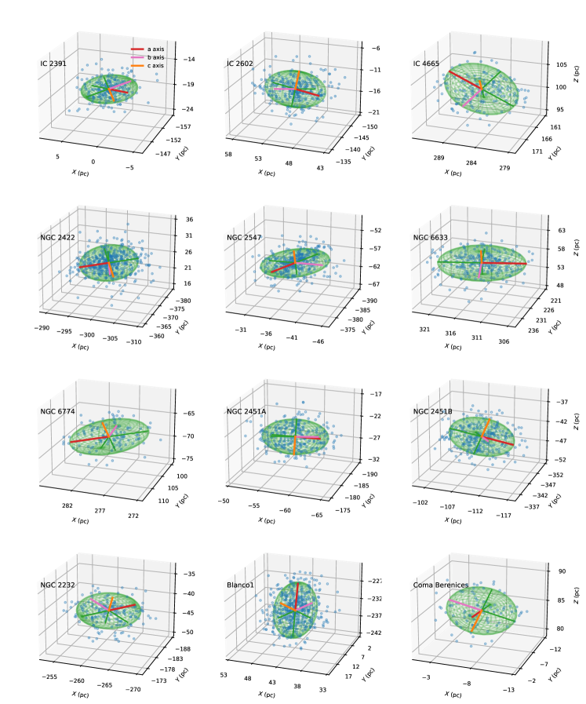
Appendix E إعداد محاكاة الأجسام
E.0.1 الطريقة العددية
يتم إجراء عمليات محاكاة الأجسام بواسطة الكود NBODY6. يستخدم الكود أحدث التقنيات الرقمية (Kustaanheimo & Stiefel, 1965; Ahmad & Cohen, 1973; Aarseth et al., 1974; Mikkola & Aarseth, 1990; Makino, 1991; Makino & Aarseth, 1992) للتعامل مع النطاق الديناميكي الكبير للخطوات الزمنية للنجوم قيد التكامل. تم اعتماد خوارزميات التطور النجمي والتطور الثنائي من Tout et al. (1996); Hurley et al. (2000, 2002). تخضع العناقيد النموذجية لقوة الجاذبية الخارجية للمجرة، والتي يتم تقريبها بواسطة نموذج Allen & Santillan (1991). يمكن العثور على وصف تفصيلي لـ NBODY6 وتطبيقات أخرى في Spurzem (1999)، وAarseth (2003)، وWang et al. (2015, 2016).
E.0.2 الشروط الثنائية الأولية
الثنائيات ذات الكتلة الأولية المنخفضة (، حيث ) لها معلمات مدارية (أي نصف المحور الأكبر والانحراف) ونسب الكتلة المتولدة من التوزيع الثنائي الأولي لـ Kroupa (1995a)، في حين يتم إنشاء الثنائيات الأولية الأكثر ضخامة من تلك وفقًا للتوزيع من Sana et al. (2012) و Moe & Di Stefano (2017). يتم إنشاء الشروط الأولية للمجموعات النجمية باستخدام حزمة البرامج mcluster (Küpper et al., 2011).
E.0.3 طرد الغاز
يتم تقريب المكون الغازي للكتلة باستخدام إمكانات الجاذبية التحليلية، والتي تتبع أيضًا ملف تعريف بلامر بنفس الطريقة نصف قطر الكتلة كعنصر نجمي. يتم الحصول على الكتلة الأولية للمكون الغازي من خلال تعريف SFE، الذي نعتمده للتبسيط كما . لا تتطور الإمكانات الغازية إلى Myr، وعندها يتم تقليلها
| (E1) |
حيث هو المقياس الزمني لطرد الغاز. يتبع ذلك إجراء Kroupa et al. (2001) وشروط مرحلة منطقة HII المدمجة للغاية.
بالنسبة لكل مجموعة من النماذج، نحصل على إدراك الكتلة الأكثر ضخامة مرتين مع بذرة أرقام عشوائية مختلفة، ويتم تحقيق مجموعة الكتلة الأولية مرات . يتم بعد ذلك حساب متوسط جميع النتائج على مجموعة النماذج التي تم تحقيقها باستخدام بذور ذات أرقام عشوائية مختلفة.